|
안정성(Safety-Critical)이 중요시되는 국방, 항공, 원자력, 철도, 의료 분야에서는 고신뢰성 소프트웨어를 개발하기 위해 산업별 국제표준에서 개발 단계별 산출대상 문서와 개발 활동을 명시하고 있다.
개발 활동의 결과물로 각 단계의 산출물(문서)을 생성하고, 산출물 내 개발된 요구사항을 기반으로 다음 단계의 개발 활동을 진행한다. 또한, 각 단계마다 상위 요구사항의 충족 여부를 확인하기 위해 요구사항 추적성 매트릭스를 작성하여 개발 시 누락된 요구사항이 존재하지 않도록 하여야 한다.
SILKROAD 요구사항관리 시스템은 SILKROAD 요구사항 편집기(DOCS), 요구사항 관리 시스템 (Requirement Management Web) 및 추적성 관리 시스템 (Traceability)으로 구성된다. 소프트웨어 개발 단계에서 생성되는 산출물(문서) 및 요구사항을 관리하기 위해 아래와 같은 주요 기능을 제공한다.
① 문서 작성 (MS-Word 기반)
② 요구사항 등록 (수동 또는 자동)
③ 요구사항 간 추적성 연결
④ 요구사항 추적성 매트릭스 (Requirement Traceability Matrix, RTM)
|
SILKROAD 문서 편집기(이하 DOCS)는 MS-Word 기반으로 문서를 작성하고 편집할 수 있는 기능을 제공한다. 문서는 DOCS에서 새로운 문서를 생성하여 처음부터 작성할 수도 있고, 기존에 사용자가 MS-Word로 작성된 문서를 가지고 있는 경우, DOCS로 MS-Word 파일을 불러올 수 있다. 사용자는 작성된 문서에서 요구사항을 식별하고, 다른 산출물(문서) 내 요구사항과 추적성을 연결할 수 있다.
SILKROAD 문서 편집기(DOCS)를 실행하기 위해서는 SILKROAD Agent 파일이 사용자의 PC에 반드시 설치되어야 한다. SILKROAD Agent 파일은 로그인페이지에서 ‘Agent Download’버튼을 클릭하거나 요구사항관리 시스템(Requirement Management)에서 ‘DOCS’ 버튼 클릭 시 다운로드 할 수 있다.
|
|
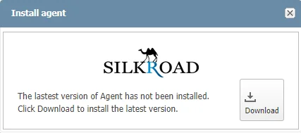 |
① Requirement 메뉴 아이콘( )을 클릭해 메뉴로 이동한다.
)을 클릭해 메뉴로 이동한다.
② Document List에서 문서를 생성할 Phase를 선택 또는 생성(New Phase)한다.
③ Document List에서 Phase 선택 후 ‘New Document’ 메뉴의 펼침(▼)버튼을 클릭한다.
④ ‘Create Document’ 버튼을 클릭한다.
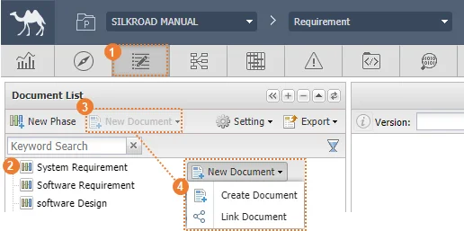 |
‘Phase’는 SILKROAD에서 문서를 관리하는 폴더를 의미한다. 소프트웨어 개발 단계별로 ‘Phase’를 생성하여 단계별로 요구사항 문서를 작성하면 추적성 분석 및 문서 관리를 편리하게 수행 할 수 있다. |
‘Create Document’기능은 마우스 우클릭하여 나타나는 콘텍스트 메뉴에서 실행할 수 있다.
① Requirement 메뉴 아이콘()을 클릭해 메뉴로 이동한다.
② Document List에서 문서를 생성할 Phase를 선택한다.
③ 마우스 우클릭하여 콘텍스트메뉴에서 ‘Create Document’를 선택한다.
|
① Requirement 메뉴 아이콘()을 클릭해 메뉴로 이동한다.
② Document List에서 1개 문서를 선택한다.
③ Document Viewer 영역 상단의 ‘DOCS’ 버튼을 클릭한다. 또는 마우스 우클릭 하여 콘텍스트 메뉴에서 ‘DOCS’를 선택한다.
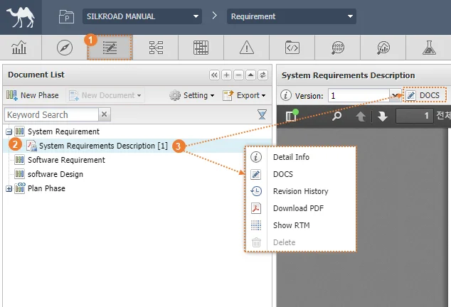 |
바탕화면에서 DOCS 아이콘을 클릭하여 직접 실행 할 수 있다. 바탕화면에서 실행하는 DOCS는 최근 작업 문서(Recent Documents)를 선택하는 기능과 새문서 생성(Create Document)/기존 문서 편집(Open Document) 기능을 제공한다. 최근 작업 문서는 PubSave로 저장한 문서와 Publish한 문서 목록을 표시한다.
① 바탕화면의 DOCS 아이콘( )을 클릭한다.
)을 클릭한다.
② DOCS 화면 하단 Recent Documents에서 DOCS 실행 대상 문서를 선택 후 OK 버튼을 클릭한다.
③ DOCS 로그인 화면에서 로그인 정보(서버 주소, 로그인 타입, 아이디, 비밀번호) 입력 후 Login을 클릭한다.(로그인 화면은 DOCS 설정에서 자동 로그인되도록 설정 가능함)
|
최근 작업 문서는 PubSave 실행/Publish 시 사용자 로컬 PC에 저장되어 있는 문서 목록을 표시한다. 최근 작업 문서 삭제는 문서 목록에서 우클릭 후 생성되는 컨텍스트 메뉴에서 ‘Remove’를 선택 후 Delete 팝업에서 Yes 버튼을 클릭한다. 삭제된 문서는 로컬 PC에 저장된 문서 데이터이며 서버에 등록된 문서는 삭제되지 않는다. |
① 바탕화면의 DOCS 아이콘( )을 클릭한다.
)을 클릭한다.
② DOCS 화면 상단 Create Document 탭에서 생성할 문서 종류(Plan/Requirement/Test Plan/Test Procedure/Test Report)를 선택한다.
③ DOCS 로그인 화면에서 로그인 정보(서버 주소, 로그인 타입, 아이디, 비밀번호) 입력 후 Login을 클릭한다.(로그인 화면은 DOCS 설정에서 자동 로그인되도록 설정 가능함)
④ New Document 창에서 문서를 생성할 Project/Menu/Phase를 선택 후 OK 버튼을 클릭한다.
|
① 바탕화면의 DOCS 아이콘( )을 클릭한다.
)을 클릭한다.
② DOCS 화면 상단 Open Document 탭에서 생성할 문서 종류(Plan/Requirement/Test Plan/Test Procedure/Test Report)를 선택한다.
③ DOCS 로그인 화면에서 로그인 정보(서버 주소, 로그인 타입, 아이디, 비밀번호) 입력 후 Login을 클릭한다.(로그인 화면은 DOCS 설정에서 자동 로그인되도록 설정 가능함)
④ Open Document 창에서 편집 대상 문서를 선택 후 OK 버튼을 클릭한다.
|
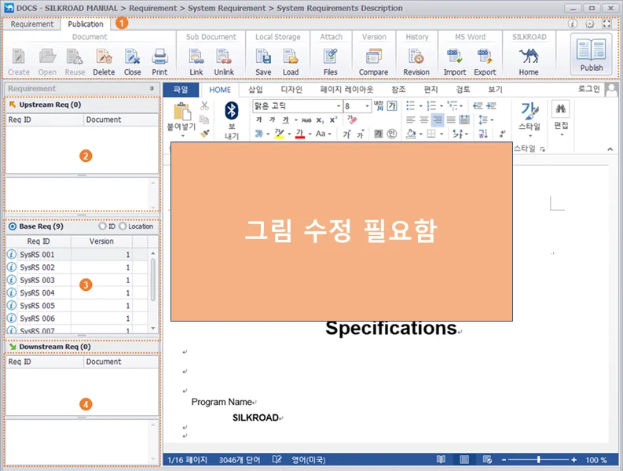 |
구분 | 명칭 | 설명 |
| 메뉴 바 | DOCS 버튼 영역(‘Requirement’ 탭, ‘Publication’ 탭) |
| Upstream Requirements | 상위 추적 요구사항 목록 |
| Base Requirements | 현재 문서 내 요구사항 목록 |
| Downstream Requirements | 하위 추적 요구사항 목록 |
| 문서 편집 영역 | 문서 편집 영역(MS-Word) |
DOCS 사용 시 설정 및 조건에 따라 자동 저장 파일, 로그 파일, 임시 저장 파일을 생성한다. 저장 파일은 기본 설정된 경로 ‘C:\Users\User\AppData\Local\SILKROAD ’ 에 저장되며, Workspace 설정을 통해 폴더 경로를 지정할 수 있다.
① DOCS ‘Setting’ 버튼을 클릭한다.
② 경로 설정 아이콘을 클릭한다.
③ 경로를 지정한다.
④ ‘확인’ 버튼을 클릭한다.
⑤ ‘OK’ 버튼을 클릭한다.
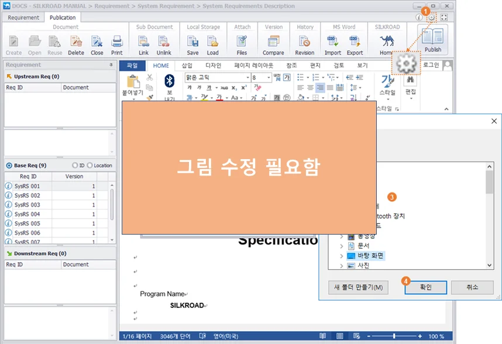 |
Workspace 설정은 저장 후 DOCS를 재실행한 뒤부터 반영된다. |
DOCS의 문서 자동 저장 기능에 대한 사용자별 설정이 가능하다. 자동 저장된 파일은 덮어쓰기를 이용해 저장되어 가장 마지막 저장된 파일을 보관한다. 문서의 최신 변경 내용을 저장하나 등록된 요구사항의 속성(Properties) 정보는 Publish 시점을 기준으로 저장한다.
① DOCS ‘Setting’ 버튼을 클릭한다.
② Autosave ‘Enable’ 체크박스를 체크한다.
③ Save Interval 분(Minute) 또는 시간(Hour)을 지정한다.
④ ‘OK’ 버튼을 클릭한다.
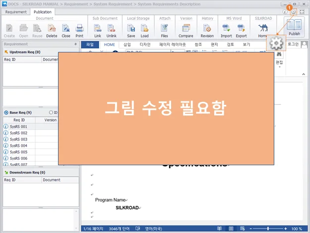 |
Auto Save 설정은 ‘OK‘버튼을 눌러 저장한 후 즉시 적용한다. |
Temp Files는 DOCS에서 작업 중 저장하는 임시 파일이 저장된 폴더이다. DOCS 사용 중 이상 현상으로 인하여 DOCS가 중지되는 경우 임시 파일에 저장된 작업 중인 내용을 확인하여 복구 할 수 있다.
① Temp Files의 ‘Browse’ 버튼을 클릭한다.
② 윈도우 탐색기에서 폴더 목록 중 가장 최근에 수정된 폴더를 클릭한다.
③ 폴더 내 Word 파일에서 작업 내용을 확인 후 복구한다.
임시 파일은 실시간으로 저장되는 것이 아니라 최신 작업 내용이 반영되었는지 확인해야 한다. |
DOCS에서는 요구사항 등록 시 장절 번호를 포함/미포함 할 수 있다. Include 옵션이 체크 상태에서는 요구사항 등록 시 요구사항 내용에 있는 장절 번호가 포함된다. 장절 번호가 포함된 요구사항 데이터는 요구사항 등록 또는 편집 시 장절 번호 변경을 업데이트 하지만, 문서에서 다른 장절 번호 수정으로 발생하는 장절 번호 변경 사항은 업데이트 하지 않는다. Include 옵션을 체크해제하면 요구사항 등록 시 요구사항 내용에 있는 장절 번호가 포함되지 않는다.
① Numbering 옵션의 ‘Include’옵션을 체크하고 저장한다.
② 장절 번호가 포함된 요구사항을 등록한다.
③ 요구사항 정보창에서 장절 번호가 표시되는 것을 확인한다.
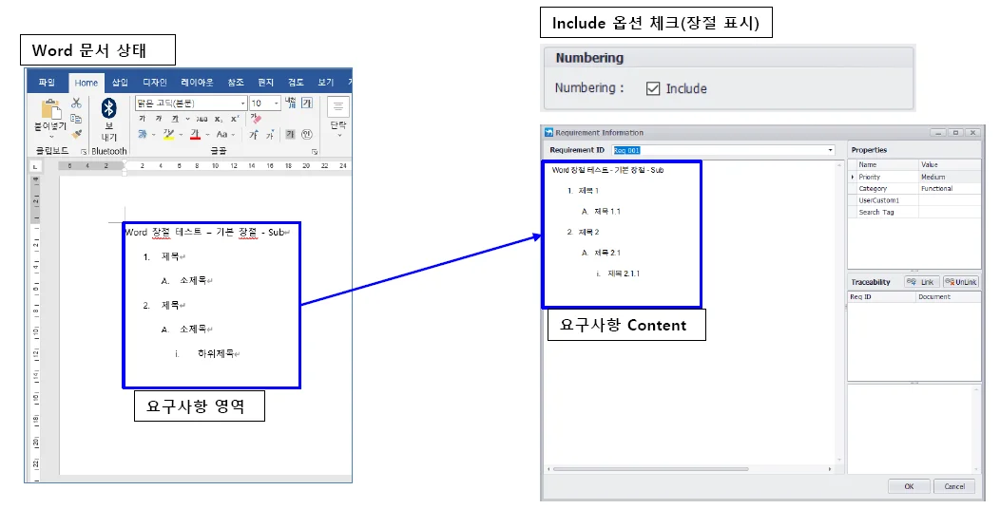
|
장절 번호 데이터는 Word에서 Tag로 관리되고 있으므로 요구사항 정보창(Text 데이터)에 항상 최신 데이터를 반영할 수 없다. 따라서 장절 번호 데이터를 요구사항 정보창에 표시하는 것을 사전에 검토 후 결정해야 한다. |
DOCS를 Local에서 실행(Stand-Alone DOCS) 하는 경우에는 로그인 정보가 필요하다. DOCS 실행 시 로그인 창에서 서버 정보와 계정 정보를 입력해야 하는데, Login 옵션에서 ‘Keep Me Logged In’ 옵션 활성화 시 자동 로그인 기능을 실행 할 수 있다.
① ‘Keep Me Logged In’ 옵션 활성화 후 저장한다.
② 바탕화면에서 DOCS 아이콘을 클릭하여 DOCS를 실행한다.
③ 로그인 팝업창이 생성되지 않고, DOCS가 실행되는 것을 확인한다.
바탕화면에서 실행한 DOCS 화면을 DOCS에서 실행하는 기능이다. DOCS 화면에서는 최근 작업 문서(Recent Documents)를 선택하는 기능과 새문서 생성(Create Document)/기존 문서 편집(Open Document) 기능을 제공한다. 최근 작업 문서는 PubSave로 저장한 문서와 Publish한 문서 목록을 표시한다.
① ‘Publication’ 탭의 ‘DOCS’ 그룹에서 ‘Files’ 버튼을 클릭한다.
② ‘DOCS’화면에서 원하는 작업을 선택한다.
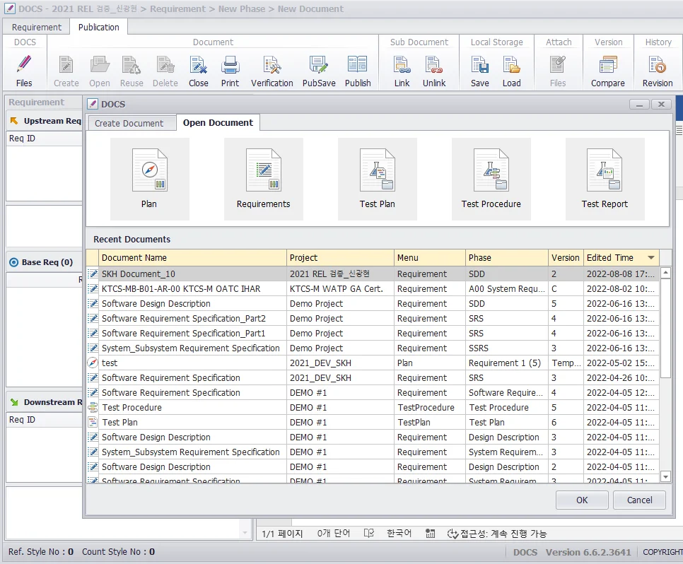 |
실행한 DOCS에서 문서 위치를 지정해 새로운 문서를 생성하는 기능이며, 문서편집기에는 MS-Word가 내장되어 있다. Create 실행 시 DOCS가 실행되어진 프로젝트와 Phase 경로를 기본 제공하며, 사용자 계정이 참여되어 있고, 작성 권한이 부여된 모든 프로젝트의 동일 메뉴 경로를 지정해 문서 생성이 가능하다.
① ‘Publication’ 탭의 ‘Document’ 그룹에서 ‘Create’ 버튼을 클릭한다.
② ‘New Document’화면에서 문서를 생성 할 프로젝트와 Phase를 선택한다.
③ ‘OK' 버튼을 클릭한다.
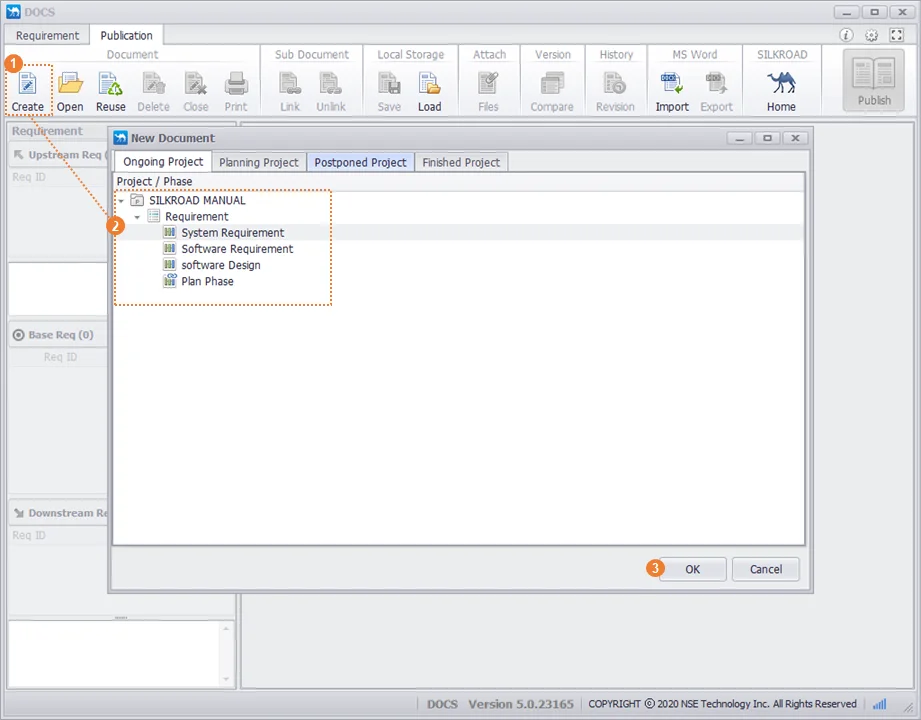 |
‘Create’ 버튼은 DOCS 내 MS-word가 열려 있지 않은 경우 활성화 된다. DOCS Publication 그룹에서 ‘Close’ 기능을 이용해 DOCS 내 Word를 종료한 경우 ‘Reuse’ 기능을 사용할 수 있다. |
SILKROAD 서버에 저장된 요구사항 문서를 DOCS에 여는 기능이다. 편집 권한이 있는 문서에 한하여 문서 열기 및 편집이 가능하다.
‘Open’ 대상은 사용자가 쓰기(Write) 권한 이상을 가진 문서로 제한된다. 다른 사용자가 잠근(Lock)문서는 ‘Open’ 할 수 없고, Baseline에 등록된 문서는 Change Request를 통해 사용자 설정한 편집 가능 상태(Status)에 진입한 경우 ’Open’ 할 수 있다.
① ‘Publication’ 탭의 ‘Document’ 그룹에서 ‘Open’ 버튼을 클릭한다.
② ‘Open Published Document’화면에서 프로젝트 목록에서 프로젝트와 Phase를 선택한다.
③ 문서 목록에서 불러올 문서를 선택한다.
④ ‘OK’ 버튼을 클릭한다.
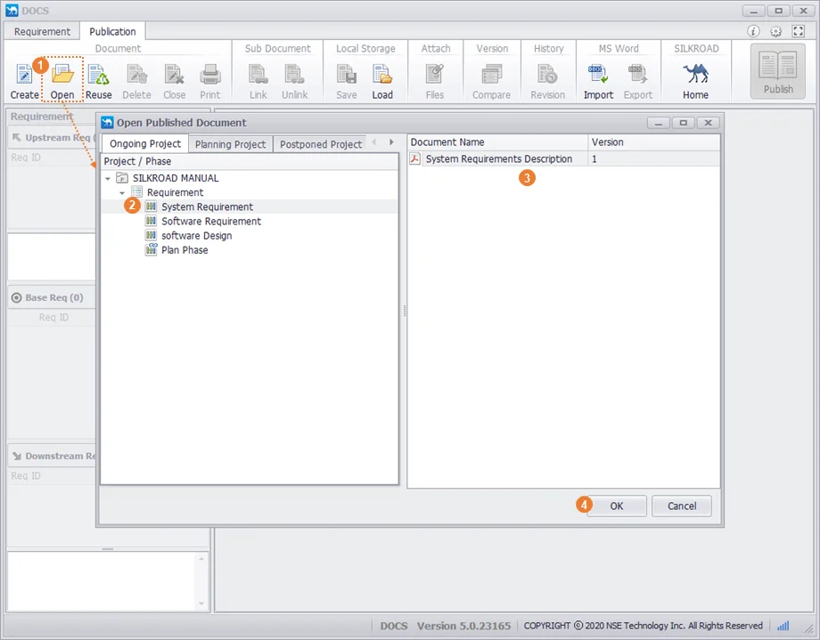 |
SILKROAD에 등록된 문서를 DOCS에 불러오기 하여 재사용할 수 있다. 재사용 대상 문서의 추적성 연결 정보를 제외한 문서 정보 및 내용과 선택에 따라 포함된 요구사항 정보를 불러온다. ‘Reuse’ 대상 문서는 사용자에게 쓰기(Read) 이상의 권한이 부여된 문서로 제한하며, 문서 권한이 ‘None’ 인 문서는 재사용할 수 없다. 또한, 다른 사용자가 잠근 문서(Lock)는 재사용할 수 없다.
재사용 대상 문서에 등록된 요구사항이 존재하지 않는 경우;
① ‘Publication’ 탭의 ‘Document’ 그룹에서 ‘Reuse’ 버튼을 클릭한다.
② ‘New Document’ 화면에서 문서를 생성할 경로의 프로젝트와 Phase를 선택한다.
③ ‘OK’ 버튼을 클릭한다.
④ ‘Select Document’화면에서 재사용 할 문서의 프로젝트와 하위 Phase를 선택한다.
⑤ 재사용 대상 문서를 선택한다.
⑥ ‘OK’ 버튼을 클릭한다.
재사용 대상 문서에 등록된 요구사항이 존재하는 경우;
① ‘Publication’ 탭의 ‘Document’ 그룹에서 ‘Reuse’ 버튼을 클릭한다.
② ‘New Document’ 화면에서 문서를 생성할 경로의 프로젝트와 Phase를 선택한다.
③ ‘OK’ 버튼을 클릭한다.
④ ‘Select Document’화면에서 재사용 할 문서의 프로젝트와 하위 Phase를 선택한다.
⑤ 재사용 대상 문서를 선택한다.
⑥ ‘OK’ 버튼을 클릭한다.
⑦ 요구사항 복구 여부를 선택하는 화면에서 복구를 원할 경우 ‘Yes’, 원하지 않는 경우 ‘No’ 버튼을 선택한다.
|
‘Reuse’ 버튼은 DOCS 내 MS-word가 열려 있지 않은 경우 활성화 된다. DOCS Publication 그룹에서 ‘Close’ 기능을 이용해 DOCS 내 Word를 종료한 경우 ‘Reuse’ 기능을 사용할 수 있다. |
실크로드에 등록된 문서 중 DOCS에 열려있는 대상 문서를 삭제한다. 문서 삭제 기능은 Project Manager를 비롯해 사용자 권한 Admin 이상인 사용자에게 활성화된다.
① ‘Publication’ 탭의 ‘Document’ 그룹에서 ‘Delete’ 버튼을 클릭한다.
② ‘Yes’ 버튼을 클릭한다.
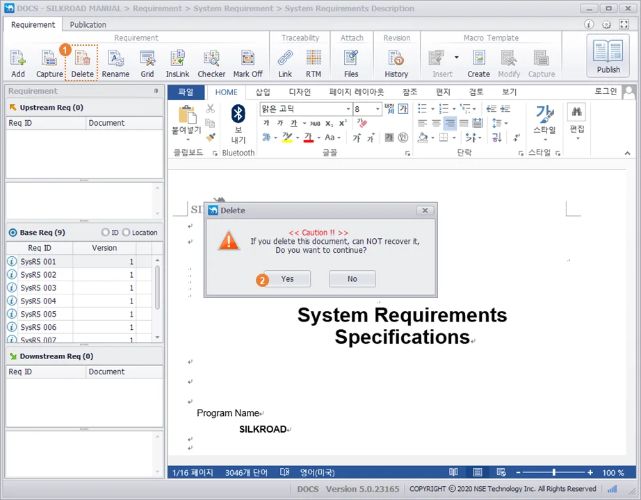 |
Master 문서를 삭제하려는 경우 Master 문서 단독으로 삭제와 병합되어 있는 Sub Document 동반 삭제 여부를 선택할 수 있다.
① ‘Publication’ 탭의 ‘Document’ 그룹에서 ‘Delete’ 버튼을 클릭한다.
② ‘Yes’ 버튼을 클릭한다.
③ 병합된 Sub Document를 함께 삭제하고자 하는 경우 ‘Yes’ 버튼을 클릭한다.
④ Master 문서만 삭제하려는 경우 ‘No’ 버튼을 클릭한다.
⑤ ‘Are you sure to delete M document only?‘ 안내팝업에서 ‘Yes’ 버튼을 클릭한다.
|
Sub Document 삭제는 Master 문서에서 Unlink 기능을 통해, Sub Document 상태 해제 후 기능한다. |
문서 삭제 기능은 Project Manager, Super 및 Admin 권한을 가진 사용자가 사용할 수 있다.
① Requirement 버튼()을 클릭한다.
② 삭제 할 문서를 클릭한다.
③ 마우스를 우클릭하여 콘텍스트메뉴에서 ‘Delete Item’을 선택한다.
④ ‘Do you want to delete this document?’안내팝업에서‘Yes’를 클릭한다.
|
Master 문서를 삭제하려는 경우 Master 문서 단독으로 삭제와 병합되어 있는 Sub Document 동반 삭제 여부를 선택할 수 있다.
① 삭제 할 문서를 클릭한다.
② 마우스를 우클릭하여 콘텍스트메뉴에서 ‘Delete Item’을 선택한다.
③ ‘Do you want to delete sub document(s) as well?’ 안내팝업에서 ‘Yes’ 버튼을 클릭한다.
④ 병합된 Sub Document를 함께 삭제하고자 하는 경우 ‘Yes’ 버튼을 클릭한다.
⑤ Master 문서만 삭제려는 경우 ‘No’ 버튼을 클릭한다.
⑥ ‘Are you sure to delete M document only?‘ 안내팝업에서 ‘Yes’ 버튼을 클릭한다.
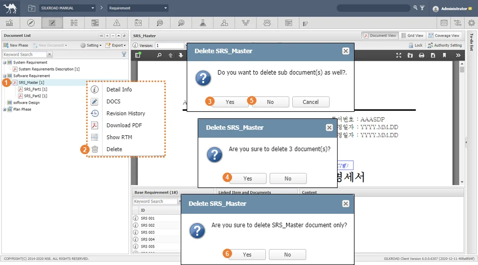 |
Sub Document 삭제는 Master 문서에서 Unlink 기능을 통해, Sub Document 상태 해제 후 기능한다. 잠금 설정(Lock) 문서는 잠금 해제(Unlock) 후 삭제할 수 있다. |
DOCS에서 현재 편집중인 Wrod 문서를 종료하는 기능이다. DOCS에 열려 있는 문서를 닫기(Close) 하면 새로운 문서 작성(Create, Reuse) 또는 열기(Open) 기능이 활성화되어 새로운 편집 대상 문서를 선택할 수 있다.
① ‘Publication’탭의 ‘Document’그룹에서 ‘Close’버튼을 클릭한다.
② ‘Do you want to close this document?’ 안내팝업에서 ‘Yes’를 선택한다.
① ‘Publication’탭의 ‘Document’그룹에서 ‘Close’버튼을 클릭한다.
② ‘The document has been change. Do you want to publish it?’ 안내팝업이 생성된다. Publish를 원할 경우 ‘Yes’를 선택해 Publish를 진행하고 원하지 않는다면 ‘No’를 선택한다.
③ ‘Do you want to close this document?’ 안내팝업에서 ‘Yes’를 선택한다.
① ‘Publication’탭의 ‘Document’그룹에서 ‘Close’버튼을 클릭한다.
② ‘Do you want to unlock this document?’안내팝업에서 ‘Yes’또는 ‘No’또는 ‘Cancel’을 선택한다.
(Yes 선택 시) 해당 문서는 잠금해제(Unlock) 상태가 되어 쓰기(Write)이상의 권한이 있는 사용자가 편집 할 수 있다.
(No 선택 시) 해당 문서는 잠금(Lock) 상태가 되어 문서 작성자 본인 및 관리자(Administrator)만 편집 할 수 있다.
(Cancel 선택 시) 문서 닫기 기능이 취소된다.
① ‘Publication’탭의 ‘Document’그룹에서 ‘Close’버튼을 클릭한다.
② ‘The document has been change. Do you want to publish it?’ 안내팝업이 생성된다. Publish를 원할 경우 ‘Yes’를 선택해 Publish를 진행하고 원하지 않는다면 ‘No’를 선택한다.
③ ‘Do you want to unlock this document?’안내팝업에서 ‘Yes’또는 ‘No’또는 ‘Cancel’을 선택한다.
④ (Yes 선택 시) 해당 문서는 잠금해제(Unlock) 상태가 되어 쓰기(Write)이상의 권한이 있는 사용자가 편집 할 수 있다.
(No 선택 시) 해당 문서는 잠금(Lock) 상태가 되어 문서 작성자 본인 및 관리자(Administrator)만 편집 할 수 있다.
(Cancel 선택 시) 문서 닫기 기능이 취소된다.
|
현재 편집 중인 문서를 인쇄하는 기능이다.
① ‘Publication’탭의 ‘Document’그룹에서 ‘Print’버튼을 클릭한다.
② 프린터를 선택하여 출력한다.
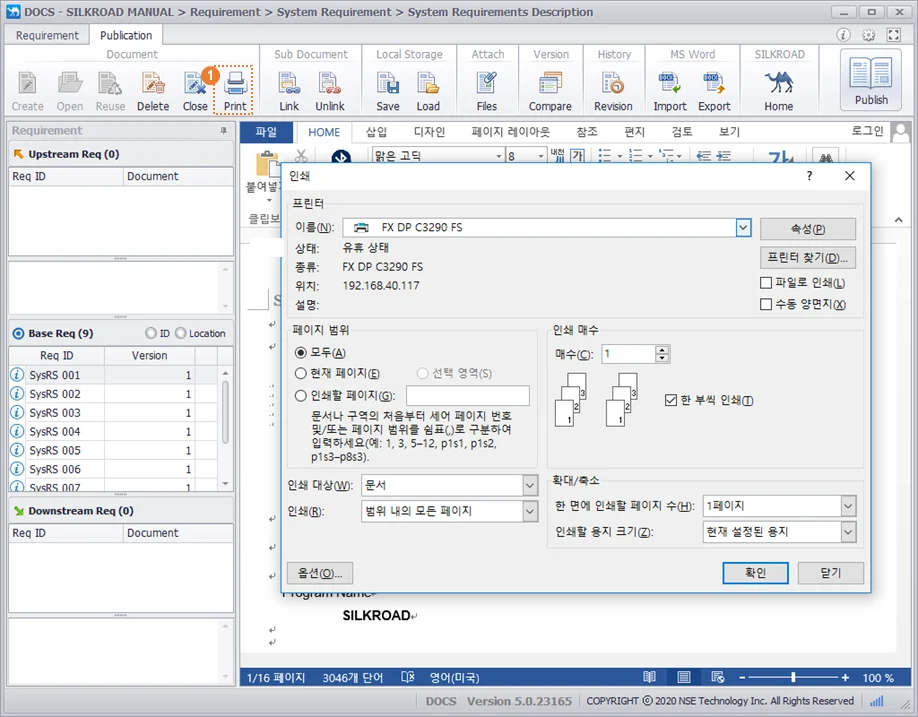 |
실크로드 요구사항 데이터는 Word 내 컨텐츠 컨트롤/북마크 객체를 활용한다. Verification은 사용자가 편집 중 컨텐츠 컨트롤/북마크 객체를 변경 또는 삭제하여 요구사항 데이터 오류로 Publish Fail등 오류가 발생 할 경우, 문서 내 컨텐츠 컨트롤/북마크 객체 데이터를 검증하고 복구하는 기능이다. 문서 검증 및 복구 내용은 아래와 같다.
요구사항으로 등록되지 않은 컨텐츠 컨트롤 삭제
요구사항으로 등록되지 않은 비정상적인 북마크 삭제
컨텐츠 컨트롤이 없는 요구사항 삭제
Pass/Fail 북마크 정리
북마크 위치 조정
요건 내용 비교 후 변경 요건 검사
① ‘Publication’탭의 ‘Document’그룹에서 ‘Verification’버튼을 클릭한다.
② 문서 검증 결과 창을 확인한다.
Abnormal ContentControl/Bookmarks ( ) are found and corrected : 비정상적인 컨텐츠컨트롤/북마크 데이터 ( )개를 수정하였음
No abnomal unit requirement was found : 문서 내 비정상적인 데이터 없음
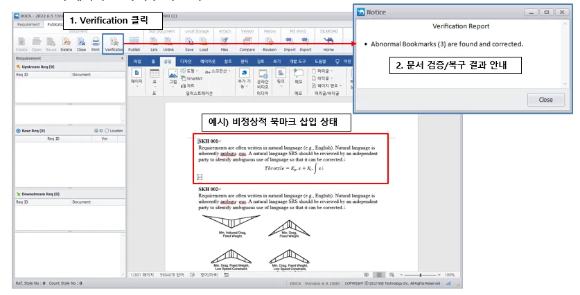 |
Word 내 컨텐츠 컨트롤/북마크 객체는 실크로드 요구사항 데이터와 연계되어 있어 문서 편집 시 주의해야 한다. 문서 내 요구사항 데이터 복사 시 Content Control이 복사되며, 복사된 Content Control은 요구사항 등록 시 오류가 발생할 가능성이 있다. 문서 내 요구사항 영역을 이동하기 위하여 잘라내기 시 실크로드 요구사항이 삭제된다. |
하나의 요구사항/디자인 문서를 여러 개의 섹션으로 나누어 동시에 여러 명이 함께 작업하고 각 문서를 하나의 문서로 병합하는 기능이다. 병합된 최종 문서는 PDF와 MS Word 파일로 생성된다.
병합 대상 문서로 선택 할 수 없는 문서는 다음과 같다.
- 다른 사용자가 잠금 설정(Lock)한 문서
다른 사용자가 잠근 문서는 병합 대상 문서로 선택 시 제한 안내 팝업이 생성된다. 해당 문서를 잠금 해제(Unlock) 시 선택이 가능하며, 문서를 잠근 담당자 또는 관리자를 통해 잠금 해제가 가능하다.
- 사용자의 문서 권한이 ‘Read’문서
병합 대상 문서는 사용자에게 부여된 문서권한이 ‘Write’ 이상인 문서를 선택해 추가 할 수 있다. 문서권한이 ‘Read’인 경우, 문서 선택 시 안내 팝업이 생성된다. 관리자를 통해 해당 문서에 대해 쓰기(Write) 권한 이상을 부여 받을 시 병합 대상 문서로 선택이 가능하다.
- 사용자의 문서 권한이 ‘None’문서
병합 대상 문서를 선택하는 사용자에게 부여된 문서권한 ‘Read’ 이상인 문서만 목록에 표시되고, 권한이 없는(None) 문서는 목록에 표시되지 않는다. 관리자를 통해 해당 문서에 대해 쓰기(Write) 권한 이상을 부여 받을 시 병합 대상 문서로 선택이 가능하다.
- 이미 병합되어 있는 문서
이미 병합되어 있는 문서들은 병합 대상 문서를 선택하는 목록에 표시되지 않는다. 해당 문서를 선택하고자 할 때는 Sub Document 제거(Unlink)를 통해 병합 상태 해제 시 병합 대상 문서 목록에 표시되어 선택이 가능하다.
① ‘Publication’ 탭의 ‘Sub Document’ 그룹에서 ‘Link’ 버튼을 클릭한다.
② ‘Open Published Document’화면에서 병합할 문서가 존재하는 프로젝트 및 하위 Phase를 선택한다.
③ Sub Document 대상 문서를 선택한다.
④ ‘OK’ 버튼을 클릭한다.
병합된 문서명칭은 파란색 굵은 글씨로 콘텐츠컨트롤 내 표시된다. 본문에 삽입된 Sub Document 링크는 수정할 수 없으며 Unlink를 통해 제외할 수 있다. |
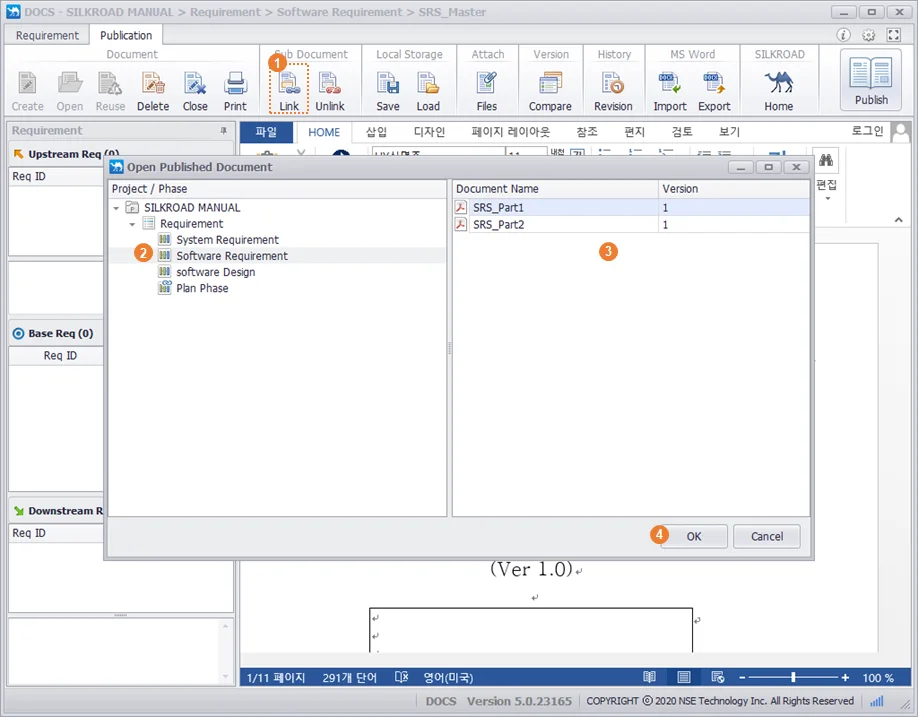 |
병합대상 문서 추가 완료 후 저장(Publish)한다. Requirement 메뉴 Document List 에 병합 문서 구조가 생성된다.
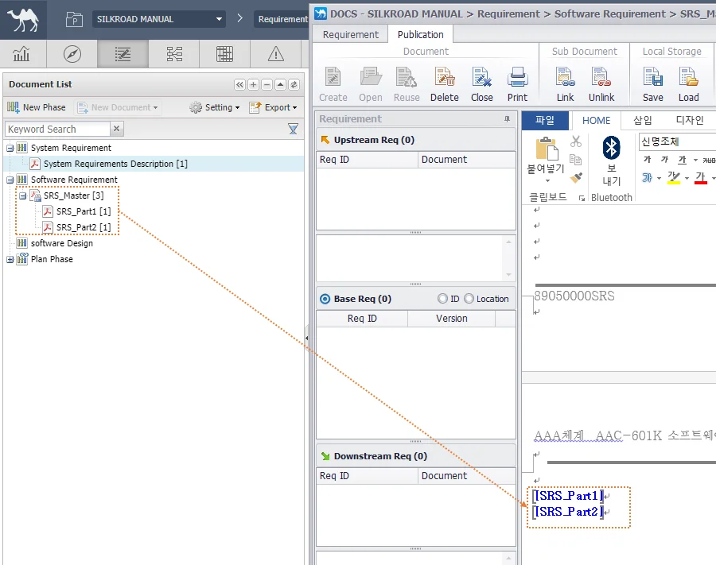 |
MS-Word의 번호 자동 매기기와 캡션삽입 기능을 사용하여 작성된 문서의 병합 시 장절 번호와 그림/표/수식의 캡션 번호가 자동으로 정렬된다. |
병합 시 문서에 위치한 순으로 병합이 진행되어 이미 추가된 ‘Sub Document’ 의 위치를 변경해 병합 대상 문서의 순서를 조정할 수 있다. 문서에 삽입된 ‘Sub Document’ 위치 이동은 최초 문서에 추가 된 후 Publish 전까지 가능하다. Publish 이후에는 Unlink 한 뒤 Publish 해 병합 상태를 해제 한 뒤 다시 문서에 추가 하는 방법으로 위치를 변경 한다.
① 문서 내 ‘Sub Document’를 위치시키고자 하는 곳에 마우스 커서를 클릭한다.
② ‘Publication’ 탭의 ‘Sub Document’ 그룹에서 ‘Link’ 버튼을 클릭한다.
③ ‘Open Published Document’화면에서 병합할 문서가 존재하는 프로젝트 및 하위 Phase를 선택한다.
④ ‘Selected document is already sub-linked. Relocate the sub-link document at the cursor location?’ 안내 팝업에서 ‘Yes’를 클릭한다.
DOCS 내 Word 문서에 추가된 병합 대상 문서를 제외하는 기능이다. 병합 대상에서 제외된 문서는 병합 대상 문서가 이루고 있던 구조에서 벗어나 삭제 및 Phase 이동이 가능한 상태가 된다.
① ‘Publication’ 탭의 ‘Sub Document’ 그룹에서 ‘Unlink’ 버튼을 클릭한다.
② Sub Document 제외 대상 문서를 선택한다.
③ ‘OK’ 버튼을 클릭한다.
④ ‘Publish’를 실행한다.
|
‘Unlink’ 실행 결과는 Publish 완료 시 반영된다. |
현재 문서를 사용자 PC에 임시 저장하는 기능이다. 문서의 Publish를 원하지 않을 경우 해당 기능을 사용하여 문서 작업이 완료 될 때까지 사용자의 로컬 저장소에 문서를 저장할 수 있다. 임시저장(수동/자동) 데이터는 Word 문서 편집 내용, 요구사항 등록/삭제 결과를 포함하며 요구사항 추적성 정보는 저장하지 않는다. 임시저장 문서는 불러오기(Load)를 통해 DOCS에서 편집하고 Publish할 수 있다.
수동 저장 실행 시점까지 작성된 내용 및 정보, 요구사항 등록 결과를 저장한다. 등록된 요구사항의 속성(Properties) 정보는 Publish 시점을 기준으로 저장한다.
① ‘Publication’ 탭의 ‘Local Storage’ 그룹에서 ‘Save’ 버튼을 클릭한다.
② ‘Enter the comments’ 항목에 사용자 코멘트를 작성한다.
③ ‘OK’ 버튼을 클릭한다.
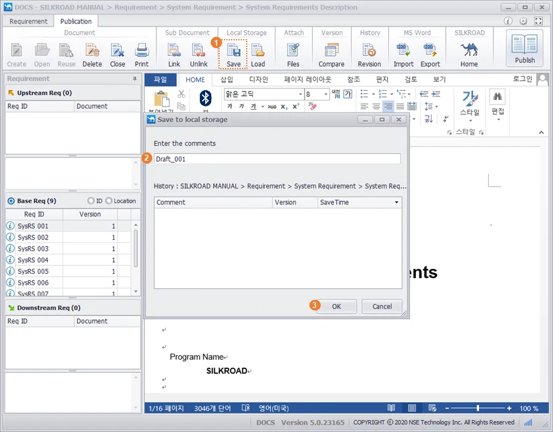 |
자동 저장된 파일은 사용자가 설정한 시간 단위로 생성되고 덮어쓰기를 이용해 저장되어 가장 마지막 저장된 파일을 보관한다. 수동 저장과 같이 문서의 최신 변경 내용을 저장하나 등록된 요구사항의 속성(Properties) 정보는 Publish 시점을 기준으로 저장한다.
① DOCS ‘Setting’ 버튼을 클릭한다.
② Autosave ‘Enable’ 체크박스를 체크한다.
③ Save Interval 분(Minute) 또는 시간(Hour)을 지정한다.
④ ‘OK’ 버튼을 클릭한다.
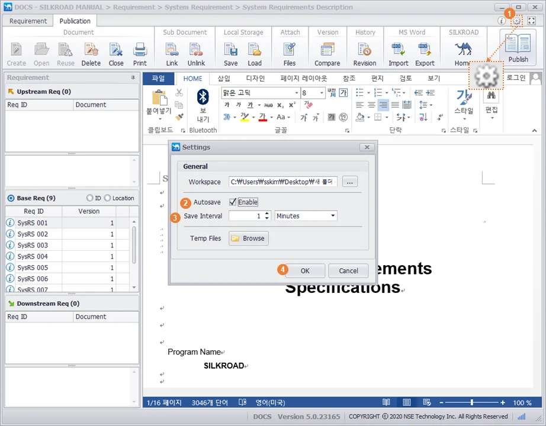 |
자동 저장 설정 입력 후 ‘OK’ 버튼을 눌러 저장하는 즉시 설정을 반영한다. |
임시저장(Save)을 통해 사용자 PC에 저장한 문서를 DOCS로 불러오는 기능이다. Local Load 문서는 ‘Local Storage’의 모든 임시저장(수동/자동) 파일을 대상으로 한다.
문서 임시저장 후 실크로드 상의 해당 문서가 Publish되어 버전이 상승한 경우 이전 버전인 임시저장 파일은 읽기전용 상태로 불러오기 기능을 실행 할 수 있다. 버전이 0인 문서를 임시저장 후 ‘Load’ 하는 경우 ‘New Document’ 생성을 위한 팝업이 제공된다.
① ‘Publication’ 탭의 ‘Local Storage’ 그룹에서 ‘Load’ 버튼을 클릭한다.
② ‘Load from Local Storage’화면의 문서 목록에서 불러올 파일을 선택한다.
③ ‘Load’ 버튼을 클릭한다.
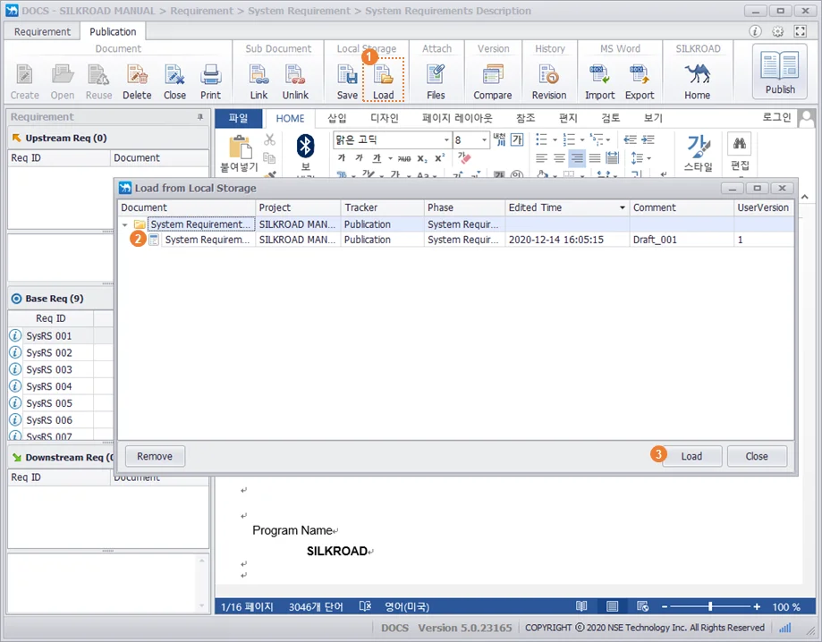 |
실크로드 서버에서 다운로드 하거나, DOCS에서 Export 기능으로 로컬 PC에 저장된 MS-Word 문서는 Import 시 새 문서 (Create)로 등록하거나 기존 등록된 문서를 업데이트하는 ‘Update’를 수행할 수 있다.
요구사항이 식별된 문서를 새 문서(Create)로 Import하는 경우 문서에 포함되어 있는 요구사항 데이터를 자동으로 등록(Restore)할 수 있다.
Word 문서 보호 기능에 의한 열기/쓰기 제한이 설정된 문서를 Import 하는 경우, 암호입력 후 파일을 불러올 수 있다.
① ‘Publication’ 탭의 ‘MS Word’ 그룹에서 ‘Import’ 버튼을 클릭한다.
② 대상 문서(MS-Word)를 선택한다.
③ ‘열기’ 버튼을 클릭한다.
④ ‘There is no document information to update. Do you want to register as a new document?’ 안내팝업에서 ‘Yes’버튼을 클릭한다.
⑤ ‘Create Document’화면에서 문서를 저장할 프로젝트 및 하위 Phase를 선택한다.
⑥ ‘OK’ 버튼을 클릭한다.
문서에 암호(Word 쓰기/읽기 암호) 설정된 경우, 문서를 생성할 프로젝트 및 하위 Phase 선택 후 암호 입력 팝업을 통해 문서를 열 수 있다. |
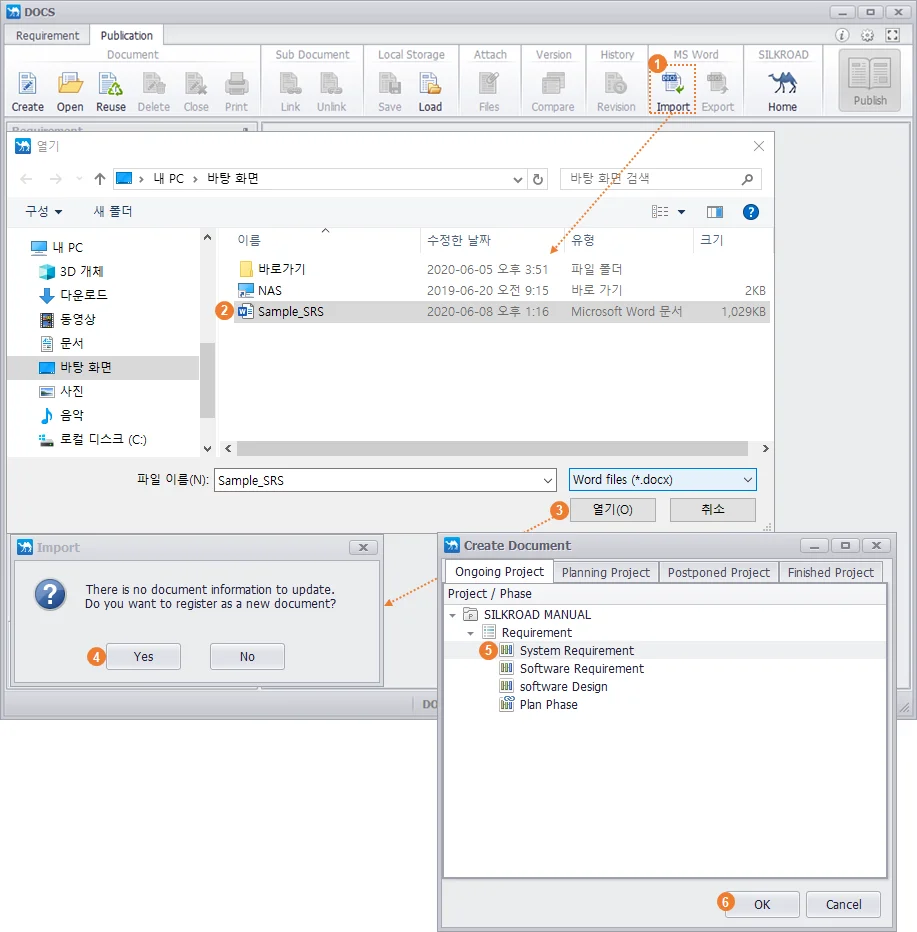 |
기존 실크로드에 등록되어 있는 문서에 ‘Update’ 하는 경우 기존 등록된 문서의 내용이 Import 문서의 내용으로 업데이트되며 요구사항에 변경사항이 있는 경우 요구사항의 버전이 증가한다. 단, 그림, 수식이 포함된 요구사항의 경우 변경사항이 없어도 버전이 증가 될 수 있다.
‘Update’ 선택 시 대상 문서가 삭제된 경우 Update를 할 수 없으며 이에 대한 알림 팝업이 생성된다. ‘Update’ 선택 시 대상 문서에 대한 사용자의 권한이 Read 이하인 경우 Update를 할 수 없으며 이에 대한 알림 팝업이 생성된다.
① ‘Publication’탭의 ‘MS Word’그룹에서‘Import’버튼을 클릭한다.
② 윈도우즈탐색기에서 불러올 문서를 선택한다.
③ ‘열기’버튼을 클릭한다.
④ ‘This is document exported from SILKROAD. Do you want to update the document or create a new document?’안내팝업에서 ‘Create’, ‘Update’ 또는 ‘Cancel’을 선택한다.
(Update선택 시) 불러오는 문서로 SILKROAD에 저장된 기존 문서가 업데이트 된다. 문서의 변경내용이 모두 자동으로 적용된다.
(Create 선택 시) 불러오는 문서는 기존 문서와는 별개로 SILKROAD에 새로운 문서로 생성된다. Restore 선택 시 기존 등록되었던 요구사항을 자동으로 등록한다.
(Cancel 선택 시) Import 기능이 취소된다.
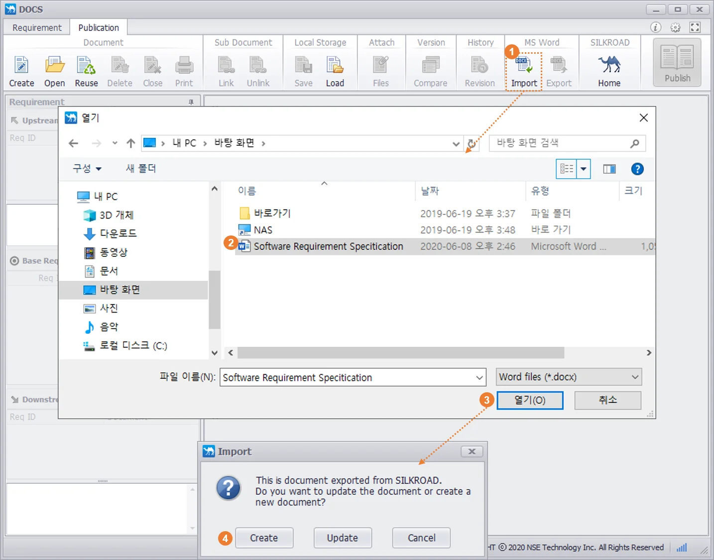 |
Import – Update 실행 시 등록된 요구사항 내용에 변경이 있는 경우 해당 요구사항의 버전이 증가한다. 단, 그림, 수식, 표를 내용에 포함한 요구사항은 수정사항이 없을지라도 요구사항 버전이 상승 할 수 있다. |
실크로드에서 다운로드 하지 않거나, DOCS에서 Export하지 않은 MS-Word 문서는 새 문서(Create) 또는 기존 문서 덮어쓰기(Select)로 등록 가능하다. 기존 문서 덮어쓰기(Select)란 실크로드에 작성된 문서의 최신 버전을 Import 대상 문서로 변경하는 기능이다. 문서의 버전을 유지하면서 문서 내용을 모두 변경하는 경우 덮어쓰기 기능을 사용할 수 있다.
Word 문서 보호 기능에 의한 열기/쓰기 제한이 설정된 문서를 Import 하는 경우, 암호입력 후 파일을 불러올 수 있다.
① ‘Publication’ 탭의 ‘MS Word’ 그룹에서 ‘Import’ 버튼을 클릭한다.
② 대상 문서(MS-Word)를 선택한다.
③ ‘열기’ 버튼을 클릭한다.
④ ‘There is no document information to update. Do you want to register as a new document?’ 안내팝업에서 ‘Yes’버튼을 클릭한다.
⑤ ‘Create Document’화면에서 문서를 저장할 프로젝트 및 하위 Phase를 선택한다.
⑥ ‘OK’ 버튼을 클릭한다.
문서 덮어쓰기(Select) 기능은 기존에 등록되어 있는 요구사항/추적성 데이터가 모두 삭제되기 때문에 사용에 유의해야 한다. |
DOCS를 통해 작성한 문서를 Word 문서로 사용자 PC에 저장한다. Export 기능은 Publish를 한 뒤부터 사용할 수 있다. 문서에 작성된 내용과 요구사항 등록 정보는 최신 상태를 반영하며 등록된 요구사항의 속성(Property) 정보는 Publish 시점을 기준으로 저장한다. 따라서 모든 최신 정보를 반영한 문서를 저장하고자 하는 경우 Publish를 마친 후 Export 해야 한다. DOCS에서 Export한 문서에 등록된 요구사항의 북마크 ID는 고유한 값이므로 복사/붙여넣기를 사용할 수 없고 Export한 문서에서 요구사항 내용을 수정하는 경우, 생성된 콘텐츠컨트롤 내에서 수행되어야 한다.
① ‘Publication’ 탭의 ‘MS Word’ 그룹에서 ‘Export’ 버튼을 클릭한다.
② Export 경로와 파일 이름을 지정한다.
③ ‘저장’ 버튼을 클릭한다.
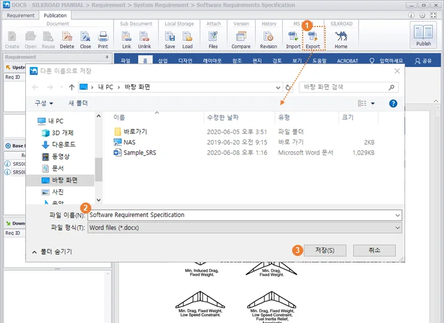 |
Export한 문서는 DOCS의 문서생성 정보(버전, 위치 등)와 등록된 요구사항 정보(북마크 ID, 콘텐츠 컨트롤)를 가진다. Export Word 문서에서 콘텐츠컨트롤 데이터를 삭제하거나 이동하는 경우 요구사항 데이터가 삭제된다. |
로컬 PC에 DOCS에서 작업한 문서 데이터(Word, 요구사항, 추적성)를 저장하는 기능이다. 저장한 데이터는 Local DOCS의 Recent Documents에서 확인할 수 있다. Local Save/Export와 기능 차이는 아래와 같다.
저장 대상 | 저장 위치 | 사용 목적 | |
Pub Save | Word 문서 요구사항 데이터 추적성 | 로컬 PC 시스템 지정 폴더 | Publish 전 문서 데이터 저장 |
Local Save | Word 문서 요구사항 데이터 | 로컬 PC 시스템 지정 폴더 | Word 임시 저장 /자동 저장 |
Export | Word 문서 요구사항 데이터 | 로컬 PC 사용자 정의 폴더 | 실크로드 접속이 안되는 외부에서 문서 편집 후 반영 |
① ‘Publication’ 탭의 ‘PubSave’ 버튼을 클릭한다.
② PubSave 결과 팝업창에서 ‘OK’ 버튼을 클릭한다.
PubSave 파일은 C:\Users\사용자계정\AppData\Local\SILKROAD\SavedPublication 폴더에 저장된다. PubSave 파일 삭제는 DOCS Files 화면의 Recent Documents 목록에서 우클릭하여 Delete로 가능하다. PubSave 파일은 문서의 최신 버전만 유지하며, 과거 버전은 저장하지 않는다. |
DOCS의 ‘Publish’기능은 DOCS에서 작성된 문서, 요구사항 및 추적성 정보 등을 SILKROAD 서버에 저장하는 기능이다. 문서의 버전(Version)은 시스템에서 기본적으로 ‘1’로 설정되며, 사용자가 변경할 수 있다. Publish 실행 시마다 자동으로 이전 문서 버전 +1로 제공된다. Publish 시 옵션을 통해 문서의 속성 필드 정보를 설정하거나 문서의 PDF 생성 옵션(PDF 생성 대상/변경이력 표시)을 결정할 수 있다.
구분 | 명칭 | 설명 |
| Project | 문서가 저장될 프로젝트 명칭 |
| Menu | 문서가 저장될 메뉴 명칭 |
| Phase | 문서가 저장될 Phase 명칭 |
| Doc Name* | 문서 명칭 (필수 입력) |
| Version* | 문서 버전 (필수 입력) |
| Convert To Pdf | 문서 PDF 생성 대상과 변경내용 표시를 결정 |
| Description (Reason For Changes)* | 개정 이력 (필수 입력) |
| Publish | 문서 발행(서버 저장) |
| Property | 문서 속성 정보 |
| OK | 문서 발행(서버 저장) |
① DOCS 우측 상단 ‘Publish’ 버튼을 클릭한다.
② 필수 입력항목인 문서 제목(Doc Name), 버전(Version) 및 설명(Description)을 입력한다.
③ ‘Convert To Pdf’ 옵션(Server, Local, Not now)을 선택한다.
④ (Server 선택 시) Publish 단계에서 PDF 생성 시퀀스가 제외된다. Publish 완료 후 문서는 서버에서 PDF를 생성하고 진행단계(Progress Bar)를 표시 한다. 서버의 작업량 증가로 PDF 생성이 지연 될 시 진행단계 표시 팝업의 ‘Convert to PDF’ 버튼을 눌러 우선적으로 문서의 PDF를 생성할 수 있다.
⑤ (Local 선택 시) Publish 단계에서 PDF 생성 시퀀스를 진행한다. Publish 된 문서는 PDF가 생성된 채 제공된다. Markup 옵션을 체크하면 문서의 변경 내용을 PDF에 표시하며, 체크하지 않으면 문서의 변경 내용은 표시하지 않고 ‘최종본’형태로 PDF를 생성한다.
⑥ (Not now 선택 시) Publish 단계에서 PDF 생성 시퀀스가 제외된다. Publish 된 문서는 모든 변경사항(내용 수정, 요구사항 등록/삭제, 추적성 연결 등)이 반영된 상태로 PDF 만 생성하지 않는다. 해당 문서 클릭 시 필요에 따라 수동으로 PDF를 생성할 수 있는 ‘Convert to PDF’ 버튼 제공한다.
⑦ ‘Publish’ 버튼 또는 ‘OK’ 버튼을 클릭한다.
Document View의 문서 버전 콤보박스 클릭 시 각 문서 버전별 PDF 생성 상태를 아이콘으로 표시한다. PDF 생성되지 않은 버전 선택 시 수동으로 PDF를 생성할 수 있다. Publish가 완료된 문서는 자동으로 PubSave가 진행되며, Local DOCS 실행 시 Recent Documents 목록에서 확인 할 수 있다. |
Publish 팝업에서 ‘Property 버튼’을 클릭하여 문서의 속성을 설정할 수 있다. 기본적으로 문서의 우선순위(Priority)와 약어(Abbreviation)을 설정하는 필드를 제공한다. 설정된 속성 정보는 문서의 정보창에 표시한다.
① DOCS 우측 상단 ‘Publish’ 버튼을 클릭한다.
② Property 버튼을 클릭한다.
③ 속성을 입력/선택한다.
④ OK 버튼을 클릭한다.
|
‘Property’에 제공되는 속성 필드 추가는 ‘Project Setting – Custom Field‘에서 지원한다. 프로젝트 관리자는 Requirementpublication Tracker 에 필드를 추가해 ’Property ’에 표시하는 정보를 추가/삭제할 수 있다.
① 프로젝트 관리자 또는 사용자 권한 ‘Admin‘ 인 사용자가 ‘Project Setting’ 실행 후 ‘Custom Field’ 탭 이동한다.
② 대상 Tracker 선택한다.
③ Designer 영역에 Custom Templates를 드래그&드롭으로 추가하고 Value 영역을 클릭 해 데이터를 설정한다.
④ ‘OK’ 버튼 클릭한다.
⑤ Requirement 문서 DOCS 실행한다.
⑥ ‘Publish‘ 버튼 클릭한다.
⑦ ’Property‘ 버튼을 클릭한다.
|
|
사용자 PC에 있는 파일을 선택하여 현재 작업 중인 문서의 첨부파일로 등록한다. 첨부된 파일은 요구사항관리시스템의 문서 정보 창( ) ‘Attachments’ 탭에서도 열람/다운로드할 수 있다.
) ‘Attachments’ 탭에서도 열람/다운로드할 수 있다.
① ‘Publication’탭의 ‘Attach’그룹에서 ‘Files’버튼을 클릭한다.
② ‘Attachments’화면에서 좌측 상단의 ‘Browse’버튼을 클릭한다.
③ 윈도우즈 탐색기에서 첨부할 파일을 선택한다.
④ ‘열기’버튼을 클릭한다.
⑤ ‘OK’버튼을 클릭한다.
파일 추가 시 ‘Files’ 버튼에 추가된 파일의 수를 (파일 수)로 표기한다.
|
작업 중인 문서에 첨부된 파일은 삭제하는 기능이다.
① ‘Publication’탭의 ‘Attach’그룹에서 ‘Files’버튼을 클릭한다.
② ‘Attachments’화면의 첨부파일 목록에서 삭제할 파일은 선택한다.
③ 우측 상단 ‘Remove’버튼을 클릭한다.
④ OK 버튼을 클릭한다.
(Cancel 버튼 클릭 시 ) 파일 삭제 내용이 저장되지 않는다.
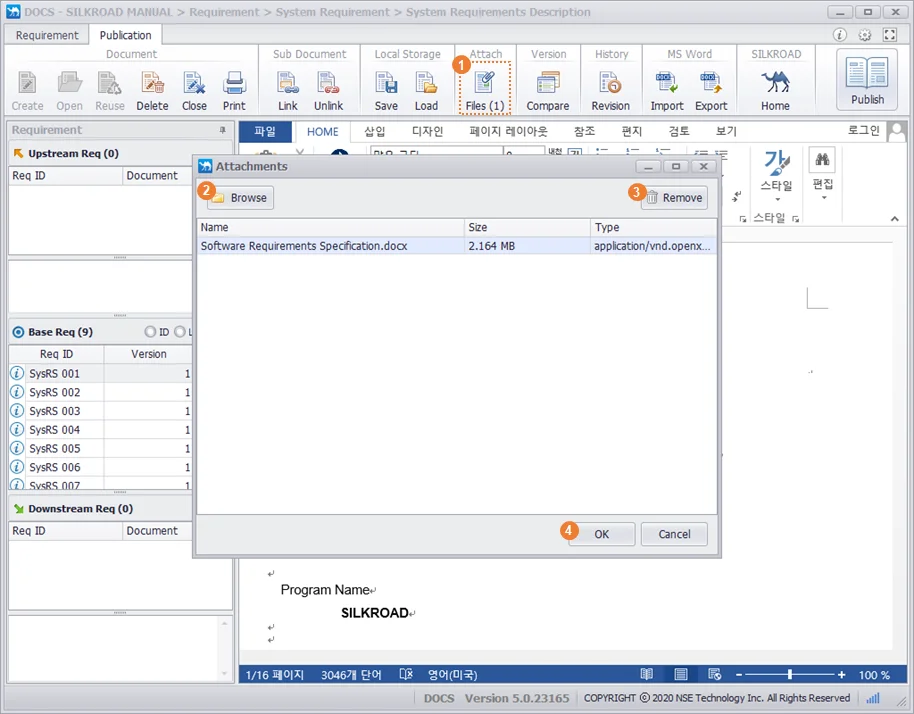 |
문서의 Publish 이력을 테이블로 생성한다. 해당 정보는 문서의 버전별 Publish 일자, 버전, 설명(Description)을 기반으로 생성된다. 테이블을 복사(Copy)하여 문서 내에 붙여 넣기(Ctrl+V) 할 수 있다.
① ‘Publication’탭의 ‘History’그룹에서 ‘Revision’버튼을 클릭한다.
|
문서의 버전 간 변경내용을 비교할 수 있다.
① ‘Publication’탭의 ‘Version’그룹에서 ‘Compare’버튼을 클릭한다.
② ‘Version Compare’화면에서 비교하고자 하는 문서 버전을 선택한다.
- Base Version : 기준 문서
- Compare Version : 비교 대상 문서
|
‘Version Compare’화면 우측 하단 ‘Export’버튼을 클릭하면 문서 비교 결과를 MS-word(.docx) 파일로 저장할 수 있다. |
요구사항 문서에 포함된 요구사항 항목을 개별 데이터로 저장하는 기능이다. 그림, 표, 수식 등 모든 개체를 요구사항으로 식별/등록할 수 있다. 본문 내 요구사항으로 지정된 영역 오직 한 개의 요구사항에만 등록될 수 있고 다른 요구사항에 중복 포함 될 수 없다.
기본으로 제공하는 요구사항 식별자(Requirement ID)는 ‘Req 001’ 이며, 사용자가 등록 시 수정 할 수 있다. 기존에 등록된 요구사항이 존재하는 경우, 새로 등록하는 요구사항 식별자 번호는 등록되어진 마지막 요구사항 식별자 번호 +1 값으로 자동 입력된다. 이미 등록된 요구사항은 정보창을 통해 ID와 속성 필드 수정, 추적성 연결이 가능하다.
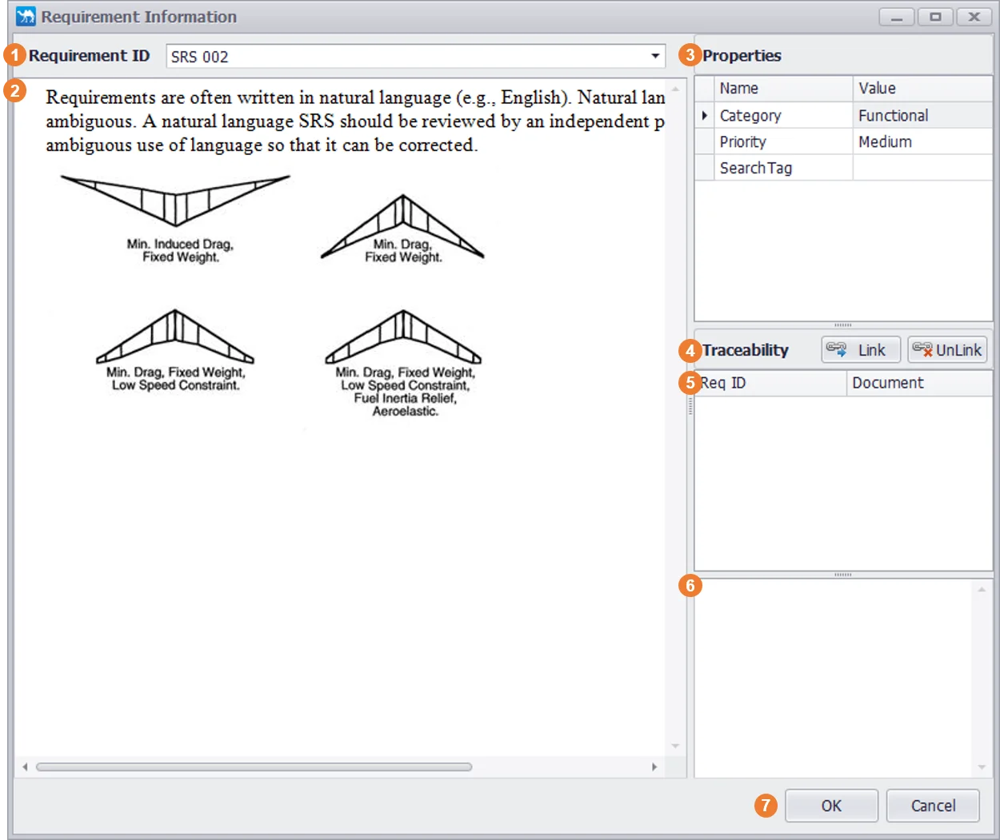 |
구분 | 명칭 | 설명 |
| Requirement ID | 요구사항 아이디 입력 필드 |
| 요구사항 내용 | 등록 대상 요구사항 내용 |
| Properties | 요구사항 속성 정보 (Category, Priority, SearchTag 등) |
| Traceability | 요구사항 추적성 연결(Link)/해제(Unlink) 버튼 |
| Req ID/ Document | 해당 요구사항과 추적성이 연결된 상위 요구사항의 ID 및 문서 명칭 |
| 요구사항 내용 | 추적성이 연결된 상위 요구사항의 내용 |
| OK / Cancel | 요구사항 등록(OK) / 취소(Cancel) |
① 요구사항으로 등록할 내용을 요구사항 식별자를 포함하여 드래그하여 블록 설정한다.
② ‘Requirement’ 탭 ‘Requirement’ 그룹에서 ‘Add’ 버튼을 클릭한다.
③ 요구사항 식별자(Requirement ID), 요구사항 중요도(Priority), 분류(Category) 정보를 입력한다.
④ ‘OK’ 버튼을 클릭한다.
|
|
요구사항이 등록되면 문서 내 요구사항 영역에 콘텐츠 컨트롤이 생성된다. 콘텐츠 컨트롤은 등록된 요구사항의 고유 정보를 가짐으로 콘텐츠 컨트롤과 내부 내용을 복사&붙여넣기 하는 행위를 지양한다. 표 내부 영역을 드래그 해 Add 하는 경우 행 단위는 요구사항 등록을 제공하나, 열 단위를 드래그 해 요구사항으로 등록할 수 없다. 행을 드래그 해 Add 하는 경우 : 1행 등록 됨 행과 열을 함께 드래그해 Add 하는 경우 : 1행만 등록됨 열을 드래그 해 Add 하는 경우 : 요구사항 등록되지 않음. ‘Failed to add data due to error occurred duringa ’Add’ Requirement’ 메시지 출력됨 |
요구사항 아이디의 특성(Tag Type)을 자동으로 식별하여 요구사항으로 등록한다. 해당 기능을 사용하여 문서 내 여러 개 요구사항을 한꺼번에 쉽고 빠르게 식별, 등록할 수 있다.
문서 내용의 앞부분(첫 번째 문장)을 스캔하여 위 요구사항 아이디 특성에 부합하는 요구사항 아이디를 추출한다. 위 규칙에 부합하는 한 문단을 요구사항 아이디(Requirement ID)로 식별하며, 그 다음에 나오는 하나의 문단을 요구사항 내용(Description)으로 식별한다. 표(Table) 내 요구사항 식별자 및 요구사항 내용은 하나의 셀에 입력되어야 한다.
요구사항 내용이 한 문단 이상일 경우, ‘End Tag’ 규칙을 사용하여 요구사항 내용(Description)이 끝나는 지점을 문서 내에 표시한다. ‘Capture’시 해당 ‘End Tag’를 입력하여 요구사항 내용을 자동 식별할 수 있다.
Tag Type ‘Capture keywords within phrases’: 요구사항 문서의 하나의 문단 내 작성된 요구사항 식별자 및 요구사항 내용을 자동 등록 |
|
구분 | 명칭 | 설명 |
| Tag Type* | 요구사항 식별자 유형 (필수 입력) |
| Start Tag* | 요구사항의 식별자 Prefix (필수 입력) |
| End Tag | 요구사항 내용이 끝나는 영역에 작성된 태그 |
| Capture keywords within phrases | 문단 내 요구사항 식별 |
| Capture keywords inside tables | 표(셀) 내 요구사항 식별 |
| Include End Tag | End Tag 까지 요구사항 내용으로 등록함. |
| Exclude End Tag | End Tag 전까지를 요구사항 내용으로 등록함. |
| Delete End Tag | 요구사항을 등록하는 동시에 End Tag를 문서 내에서 자동 삭제함. |
Scanning | 입력한 조건 기반 요구사항 조회 | |
Reset | 입력한 조건 초기화 | |
| Total Scanned Req | 입력한 조건 기반 식별된 전체 요구사항의 개수 |
| Duplicated Req | 중복된 요구사항의 개수 |
Unique Req | 중복되지 않은 요구사항의 개수 | |
| Requirements Capture Tips | 요구사항 자동 등록과 관련된 설명 |
| OK / Cancel | 요구사항 자동 등록(OK) / 취소(Cancel) |
구분 | 명칭 | 설명 |
| Capture | 입력한 조건 기반 요구사항 등록 |
| Reset | 입력한 조건 초기화 |
| Total Scanned Req | 입력한 조건 기반 식별된 전체 요구사항의 개수 |
| Duplicated Req | 중복된 요구사항의 개수 |
| Unique Req | 중복되지 않은 요구사항의 개수 |
| Req. ID | 입력한 조건 기반 검색된 요구사항 식별자(ID) |
| Upstream Document | 검색된 요구사항과 추적성이 연결된 상위 문서 명칭 (Tag Type이 [[Req]-UpDoc[UpReq],[UpReq]] 또는 <<Req>-UpDoc<UpReq>,<UpReq>> 인 경우) |
| Upstream Req. ID | 검색된 요구사항과 추적성이 연결된 상위 요구사항 식별자 (Tag Type이 [[Req]-UpDoc[UpReq],[UpReq]] 또는 <<Req>-UpDoc<UpReq>,<UpReq>> 인 경우) |
Missing Upstream Req. ID | 검색된 요구사항에서 상위 요구사항이 존재하지 않는 경우 (Tag Type이 [[Req]-UpDoc[UpReq],[UpReq]] 또는 <<Req>-UpDoc<UpReq>,<UpReq>> 인 경우) | |
요구사항 내용 | 목록에서 선택된 요구사항 내용 | |
| OK / Cancel | 요구사항 자동 등록(OK) / 취소(Cancel) |
요구사항문서 작성 시 공통적으로 입력되는 요구사항 접두사(Prefix)를 기반으로 요구사항 영역을 식별하는 기능으로, 요구사항 아이디 영역(문장) 다음에 나오는 하나의 문단을 요구사항 내용(Description)으로 식별 한다.
① ‘Requirement’ 탭의 ‘Requirement’ 그룹에서 ‘Capture’ 버튼을 클릭한다.
② ‘Tag Type’항목에서 ‘Req’를 선택한다.
③ ‘Start Tag’ 항목에 요구사항 식별자의 접두사(Prefix)를 입력한다.
④ ‘Scanning’ 버튼을 클릭한다.
⑤ ‘Capture’ 버튼 또는 ‘OK’ 버튼을 클릭한다.
요구사항 내용이 여러 문단 또는 표, 그림, 수식들을 포함하고 있는 경우 End Tag 옵션을 사용해 Capture를 수행 한다. <2.2.2.5 ‘End Tag 기반 요구사항 식별 및 자동 등록’ 참고> |
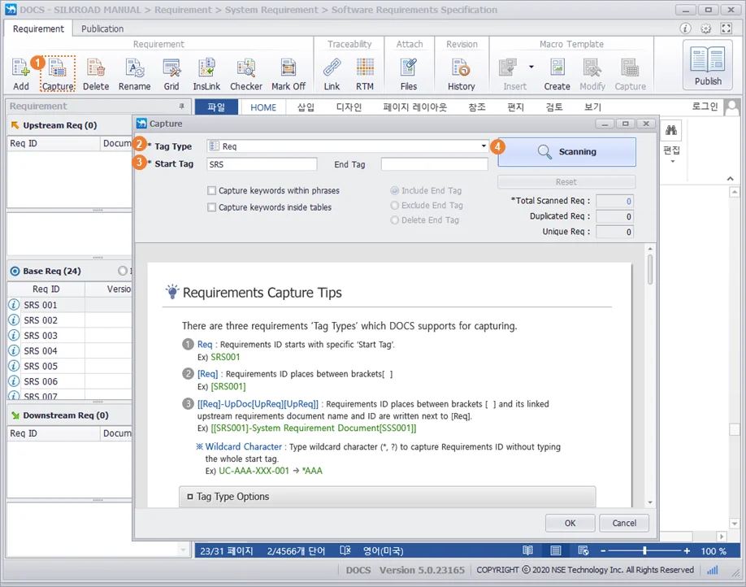 |
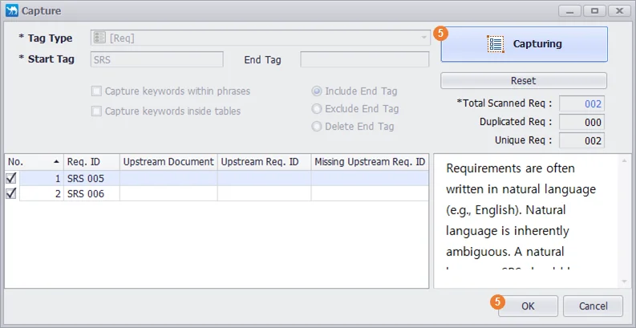 |
요구사항문서 작성 시 공통적으로 입력되는 요구사항 접두사(Prefix)+괄호([], <>)로 요구사항 영역을 식별하는 기능이다.
요구사항 아이디 영역([접두사] 또는 <접두사>로 시작하는 문장) 다음에 나오는 하나의 문단을 요구사항 내용(Description)으로 식별한다.
① ‘Requirement’ 탭의 ‘Requirement’ 그룹에서 ‘Capture’ 버튼을 클릭한다.
② ‘Tag Type’항목에서 ‘[Req]’또는 ‘<Req>’를 선택한다.
③ ‘Start Tag’ 항목에 요구사항 식별자의 접두사(Prefix)를 입력한다.
④ ‘Scanning’ 버튼을 클릭한다.
⑤ ‘Capture’ 버튼 또는 ‘OK’ 버튼을 클릭한다.
요구사항 내용이 여러 문단 또는 표, 그림, 수식들을 포함하고 있는 경우 End Tag 옵션을 사용해 Capture를 수행 한다. <2.2.2.5 ‘End Tag 기반 요구사항 식별 및 자동 등록’ 참조> |
|
현재 문서의 요구사항 등록과 해당 요구사항이 추적하는 상위 요구사항과의 추적성 연결을 동시에 할 수 있다.
본문에 요구사항 아이디 입력 시, 해당 요구사항과 추적성을 갖는 상위요구사항 문서명, 상위 요구사항 아이디를 정해진 규칙에 따라 작성하고 해당 영역을 자동으로 식별하여 요구사항 및 상위 요구사항 추적성 정보를 등록한다.
① ‘Requirement’ 탭의 ‘Requirement’ 그룹에서 ‘Capture’ 버튼을 클릭한다.
② ‘Tag Type’항목에서 ‘[[Req]-UpDoc[UpReq],[UpReq]]’ 또는 ‘<<Req>-UpDoc<UpReq>,<UpReq>>’를 선택한다.
- Req : 현재 문서에 등록된 요구사항 아이디
- UpDoc : 상위 요구사항이 존재하는 문서명(약어로 대체 가능)
- UpReq : 상위 요구사항 아이디
③ ‘Start Tag’ 항목에 요구사항 식별자의 접두사(Prefix)를 입력한다.
④ ‘Scanning’ 버튼을 클릭한다.
⑤ ‘Capture’ 버튼 또는 ‘OK’ 버튼을 클릭한다.
UpDoc 에 해당하는 상위 문서명은 약어로 대체가 가능하다. 문서의 약어는 문서의 속성 설정 기능을 통해 부여한다. <2.1.11.1 문서 속성 설정 참조> |
요구사항 내용이 여러 문단 또는 표, 그림, 수식들을 포함하고 있는 경우 End Tag 옵션을 사용해 Capture를 수행 한다. <2.2.2.5 ‘End Tag 기반 요구사항 식별 및 자동 등록’ 참고> |
상위 요구사항의 식별자를 조회할 수 없는 경우에는 아래 그림과 같이 ‘Missing Upstream Req. ID’ 항목에 찾을 수 없는 상위 요구사항 식별자가 출력된다.
|
만약, 추적성을 연결하고자 한 상위 문서가 동일 이름으로 1개 이상 존재 하는 경우 대상 문서를 선택하기 위해 팝업이 생성된다. 대상 문서를 선택하면 해당 문서 내 요구사항과 추적성을 연결하게 된다.
① ‘Start Tag’ 항목에 요구사항 식별자의 접두사(Prefix)를 입력한다.
② ‘Scanning’ 버튼을 클릭한다.
③ ‘메뉴-Phase-문서 명’을 확인해 상위 문서를 선택한다.
④ ‘Capture’ 버튼 또는 ‘OK’ 버튼을 클릭한다.
|
검색어가 포함된 Keyword를 검색하여 Keyword가 포함된 문장을 요구사항으로 등록한다.
① ‘Requirement’ 탭의 ‘Requirement’ 그룹에서 ‘Capture’ 버튼을 클릭한다.
② ‘Tag Type’항목에서 ‘keyword’를 선택한다.
③ keyword에 검색어를 입력한다.
④ ‘Scanning’ 버튼을 클릭한다.
⑤ ‘Capture’ 버튼 또는 ‘OK’ 버튼을 클릭한다.
|
요구사항 아이디 접두사를 모두 입력하지 않고, ‘*’ 또는 ‘?’ 문자를 사용하여 생략된 접두사를 대체해 요구사항 아이디를 식별할 수 있다. ‘?’는 사용된 한 자리의 접두사를 대체하고 *는 사용된 위치를 기준으로 앞/뒤 접두사를 대체한다.
① ‘Requirement’ 탭의 ‘Requirement’ 그룹에서 ‘Capture’ 버튼을 클릭한다.
② ‘Tag Type’항목을 선택한다.
③ ‘Start Tag’ 항목에 요구사항 식별자의 접두사(Prefix) 입력 시, 요구사항 식별자의 접두사를 모두 입력하지 않고, * 또는 ? 문자를 입력한다.
(? 사용 예) 요구사항 ID가 SRS-001~100 일 때 : S?S, SR?, S??
=> Scanning 결과, SRS-001~100의 요구사항이 Scanning 됨
(* 사용 예) 요구사항 ID가 ABC-SRS-C-001~100 일 때: ABC*, ABC-SRS*, *C
=> Scanning 결과, ABC-SRS-C-001~100의 요구사항이 Scanning 됨
④ ‘Scanning’ 버튼을 클릭한다.
⑤ ‘Capture’ 버튼 또는 ‘OK’ 버튼을 클릭한다.
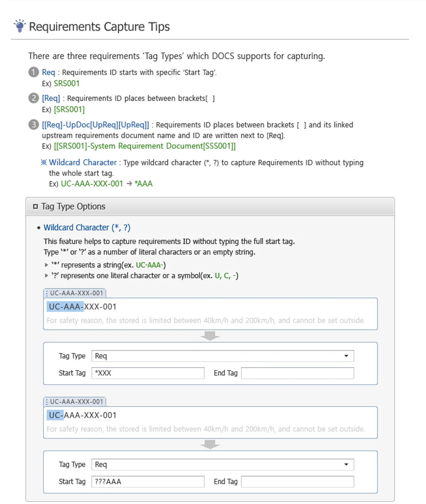 |
|
등록할 요구사항이 여러 문단으로 이루어져 있거나 내용에 표, 그림, 수식 등을 포함하고 있는 경우 정확한 영역을 식별하도록 End Tag를 사용한다. 요구사항 내용이 끝나는 영역에서 엔터(Enter)를 눌러 개행한 후 End Tag를 입력한다. 요구사항 식별 시 옵션을 통해 본문에 입력된 End Tag를 요구사항 내용에 포함/제외/삭제할 수 있다.
① ‘Requirement’ 탭의 ‘Requirement’ 그룹에서 ‘Capture’ 버튼을 클릭한다.
② ‘Tag Type’항목을 선택한다.
③ ‘Start Tag’항목에 요구사항 식별자의 접두사(Prefix)를 입력한다.
④ ‘End Tag’ 항목에 본문에 사용된 End Tag를 입력한다.
⑤ ‘Scanning’ 버튼을 클릭한다.
⑥ ‘Capture’ 버튼 또는 ‘OK’ 버튼을 클릭한다.
|
|
Include End Tag : ‘End Tag’까지 요구사항 내용으로 등록 |
요구사항 문서의 문단 내에서 요구사항 아이디와 요구사항 내용을 식별하여 자동 등록 하는 기능이다. 접두사(Prefix) 기반 자동 등록 방식을 제외한 요구사항 키워드 기반([Req]), 요구사항 및 상위 요구사항 추적성 정보 기반([Req-UpDoc[UpReq]])의 문단 내 요구사항을 식별할 수 있다.
① ‘Requirement’ 탭의 ‘Requirement’ 그룹에서 ‘Capture’ 버튼을 클릭한다.
② ‘Tag Type’항목을 선택한다. ([Req],<Req>, [[Req]-UpDoc[UpReq]], <<Req>-UpDoc<UpReq>>)
③ ‘Start Tag’ 항목에 요구사항 식별자의 접두사(Prefix)를 입력한다.
④ ‘Capture keywords within phrases’체크박스를 클릭한다.
⑤ ‘Scanning’ 버튼을 클릭한다.
⑥ ‘Capture’ 버튼 또는 ‘OK’ 버튼을 클릭한다.
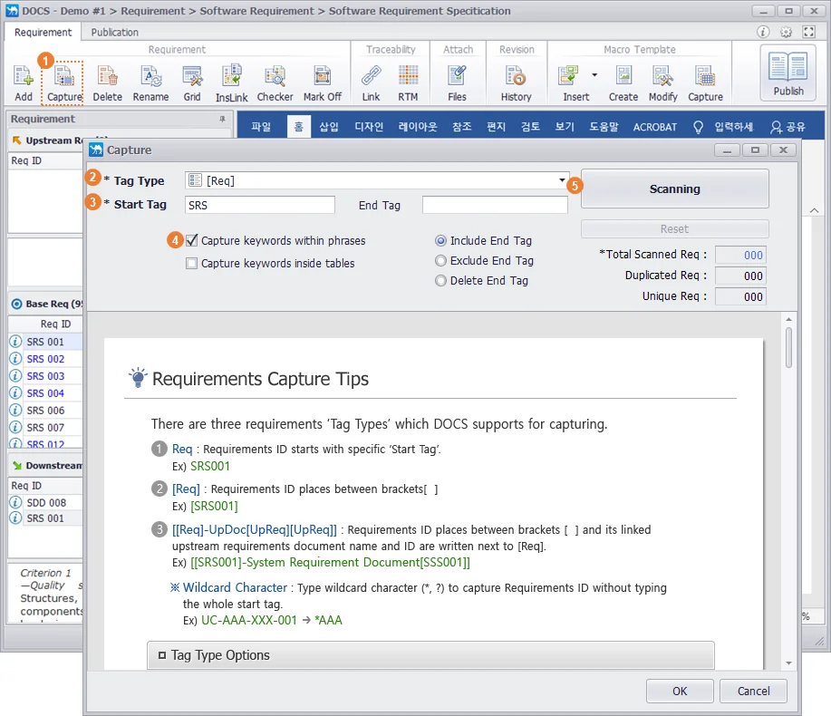 |
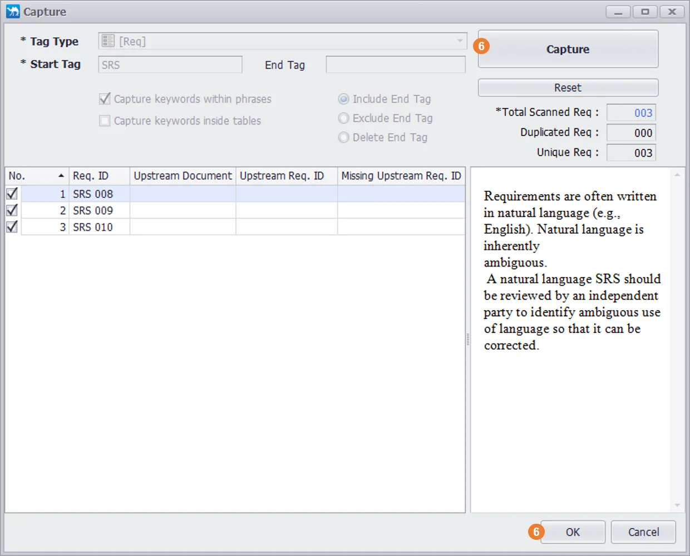 |
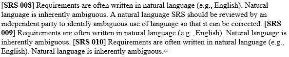 |
요구사항 문서의 표 안에 작성된 요구사항 아이디와 요구사항 내용을 식별하여 자동등록 하는 기능이다. 접두사(Prefix) 기반(Req), 요구사항 키워드 기반([Req]), 요구사항 및 상위 요구사항 추적성 정보 기반([Req-UpDoc[UpReq]])의 표 내 요구사항을 식별할 수 있다.
① ‘Requirement’ 탭의 ‘Requirement’ 그룹에서 ‘Capture’ 버튼을 클릭한다.
② ‘Tag Type’항목을 선택한다. (Req, [Req],<Req>, [[Req]-UpDoc[UpReq]], <<Req>-UpDoc<UpReq>>)
③ ‘Start Tag’ 항목에 요구사항 식별자의 접두사(Prefix)를 입력한다.
④ ‘Capture keywords within tables’체크박스를 클릭한다.
⑤ ‘Scanning’ 버튼을 클릭한다.
⑥ ‘Capture’ 버튼 또는 ‘OK’ 버튼을 클릭한다.
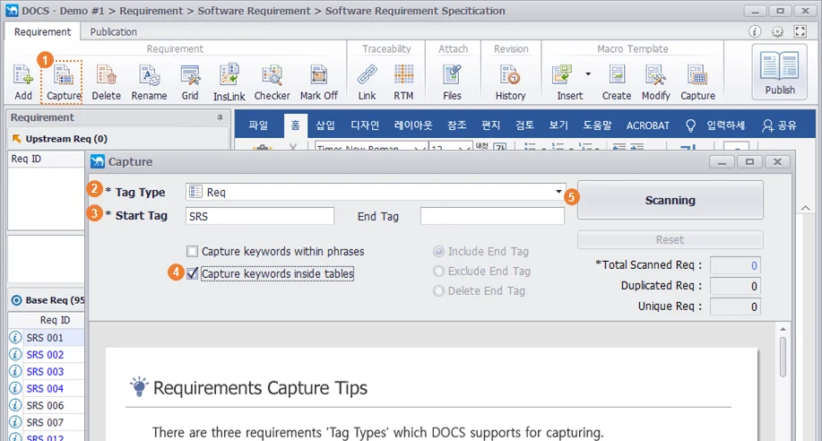 |
|
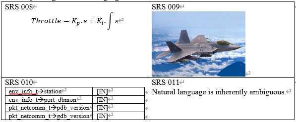 |
요구사항이 표(셀)안에 위치하고, 문장 중간에 위치할 때 ‘Capture keywords within phrase’와 ‘Capture keywords inside tables’를 모두 체크하여 요구사항을 식별할 수 있다.
① ‘Requirement’ 탭의 ‘Requirement’ 그룹에서 ‘Capture’ 버튼을 클릭한다.
② ‘Tag Type’항목을 선택한다.
③ ‘Start Tag’ 항목에 요구사항 식별자의 접두사(Prefix)를 입력한다.
④ ‘Capture keywords within phrases’체크박스를 클릭한다.
⑤ ‘Capture keywords within tables’체크박스를 클릭한다.
⑥ ‘Scanning’ 버튼을 클릭한다.
⑦ ‘Capture’ 버튼 또는 ‘OK’ 버튼을 클릭한다.
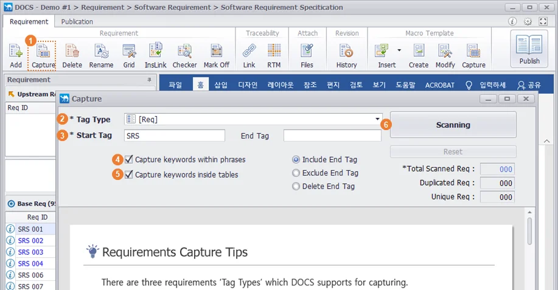 |
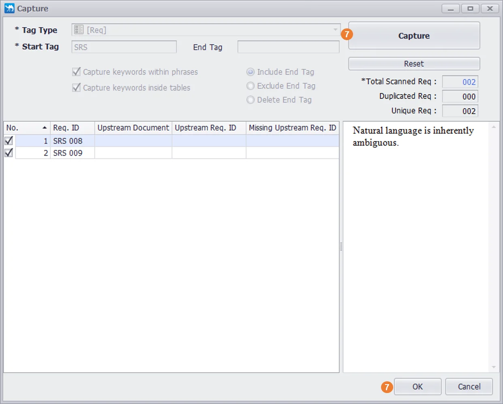 |
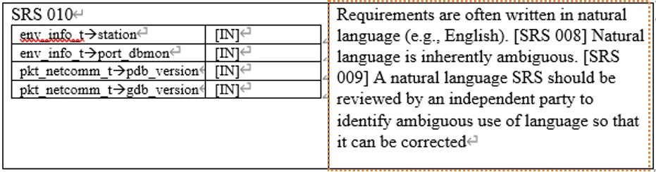 |
요구사항 내용이 여러 문단 또는 표, 그림, 수식들을 포함하고 있는 경우 End Tag 옵션을 사용해 Capture를 수행 한다. <2.2.2.5 ‘End Tag 기반 요구사항 식별 및 자동 등록’ 참고> |
등록된 요구사항 내용 수정은 콘텐츠컨트롤 내에서 수행한다. 등록되어 저장(Publish)된 요구사항의 내용을 수정하면, ‘Base Requirement’ 목록에서 해당 요구사항의 version이 한 단계 상승하며, 이에 대한 알림 아이콘 ‘’이 표시된다. 문서를 저장하기 전 변경 내용을 삭제하거나 버전업 이전 상태로 되돌리는 경우 버전은 상승하지 않고 버전 상승을 표시하는 아이콘이 사라진다. 요구사항의 버전은 해당 요구사항 문서를 저장(Publish)하면 반영된다.
① 수정 할 요구사항 영역을 클릭하여 내용을 수정한다.
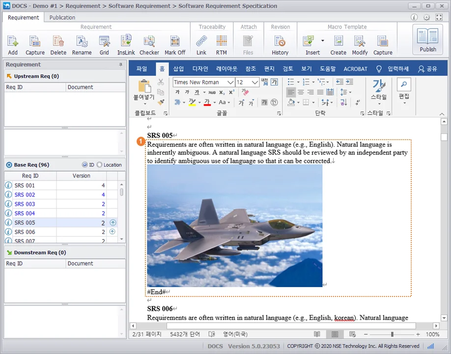 |
요구사항의 속성 정보(Priority, Category, Search Tag 등)를 설정하는 기능이며, 요구사항 등록 후 저장(Publish) 된 요구사항 속성 변경 시 ‘Base Req’ 목록에서 해당 요구사항의 버전이 증가한다. 문서를 저장하기 전 변경 내용을 삭제하거나 버전업 이전 상태로 되돌리는 경우 버전은 상승하지 않고 버전 상승을 표시하는 아이콘이 사라진다. 변경된 속성과 상승한 버즌은은 해당 문서를 저장(Publish)하면 반영된다.
① 등록된 요구사항 목록의 정보창(i) 버튼을 클릭한다.
② 문서의 속성(Properties) 정보를 변경한다.
③ ‘OK’ 버튼을 클릭한다.
|
등록된 요구사항의 아이디를 일괄적으로 수정할 수 있으며, 요구사항 문서 내 작성된 요구사항 식별자는 수정되지 않는다.
요구사항 아이디 형식 입력 시, 식별자 번호(숫자)가 들어갈 자릿수만큼 ‘0’을 입력한다. (예, SRS 001, 002, 003, ... 등으로 변경을 원하는 경우 ⇒ SRS 000 으로 입력)
아이디 형식 입력 후 ‘Rename’ 버튼 클릭 시 ‘Modified Req ID’ 항목에 변경된 아이디가 파란색으로 표시되며, 요구사항의 버전(Version)이 한 단계 상승된다.
① ‘Requirement’ 탭의 ‘Requirement’ 그룹에서 ‘Rename’ 버튼을 클릭한다.
② 수정할 요구사항 아이디 형식을 입력한다.
③ ‘Rename’ 버튼을 클릭한다.
④ ‘OK’ 버튼을 클릭한다.
|
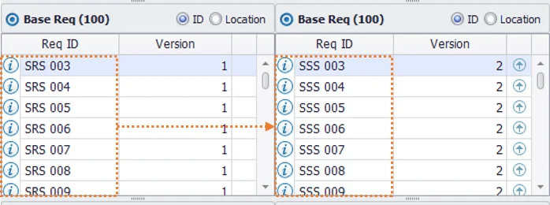 |
Sub Document가 추가되어 있는 경우 Sub Document에 등록된 요구사항 아이디를 함께 수정할 수 있다. |
칼럼별 필터 버튼을 통해 아이디를 변경할 요구사항을 필터 할 수 있다. 필터는 속성값(Value)속성값과 텍스트 필터로 구분된다.
① ‘Requirement’ 탭의 ‘Requirement’ 그룹에서 ‘Rename’ 버튼을 클릭한다.
② ‘Modified Req ID’칼럼 필터 버튼을 클릭한다.
③ ‘Values’ 또는‘Text Filters’탭을 클릭한다.
④ ‘Values’선택 시, 하단에 출력되는 목록에서 필터링 대상 항목의 체크박스를 클릭한다.
‘Text Filters’선택 시, 목록단추를 눌러 옵션을 선택한다.
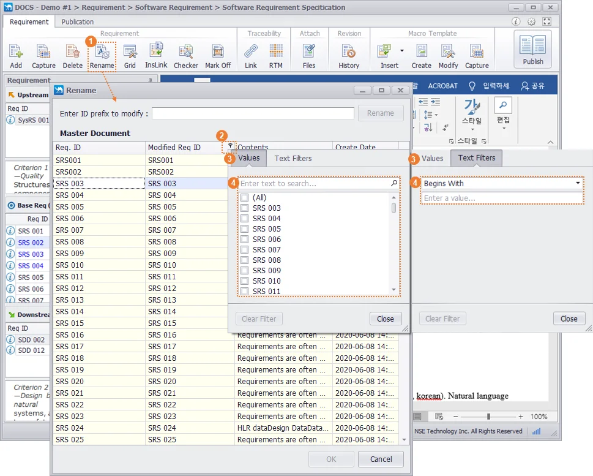 |
Text Filters 옵션은 Begins With, Equals(기본값), Does Not Equal, End With, Contains, Does Not Contain, Is Blank, Is Not Blank, Custom Filter가 제공한다. |
마스터 문서와 병합된 각 문서의 요구사항 아이디를 일괄적으로 수정하거나, 일부 요구사항의 아이디를 수정할 수 있다. 일괄 변경 시 마스터 문서와 병합된 각 문서들은 연계된 아이디를 부여 받는다. 아이디가 수정된 요구사항은 파란색으로 굵게 표시된다. 일괄 번경된 마스터 문서와 서브 문서 요구사항은 마스터 문서 저장(Publish) 시 반영되고 요구사항의 버전이 상승한다.
① 최종 병합된 문서(Master Document)의 DOCS를 실행 후 ‘Requirement’탭의 ‘Requirement’ 그룹에서 ‘Rename’버튼을 클릭한다.
② 수정할 요구사항 식별자 형식을 입력한다.
③ ‘Rename’ 버튼을 클릭한다.
④ ‘OK’ 버튼을 클릭한다.
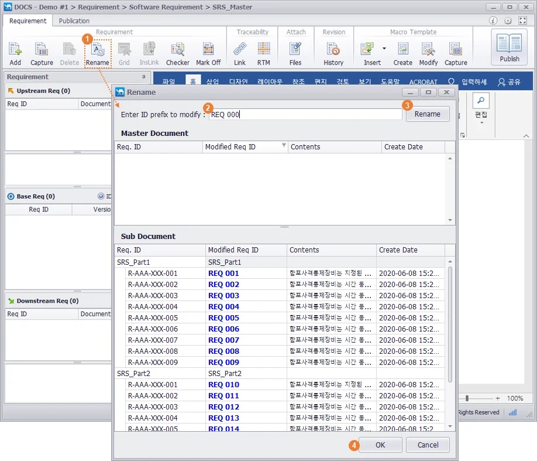 |
① 최종 병합된 문서(Master Document)의 DOCS를 실행 후, ‘Requirement’탭의 ‘Requirement’ 그룹에서 ‘Rename’버튼을 클릭한다.
② 수정하고자 하는 요구사항 아이디의 ‘Modified Req ID’칼럼을 더블클릭하여 수정할 요구사항 식별자 형식을 입력한다.
③ ‘OK’ 버튼을 클릭한다.
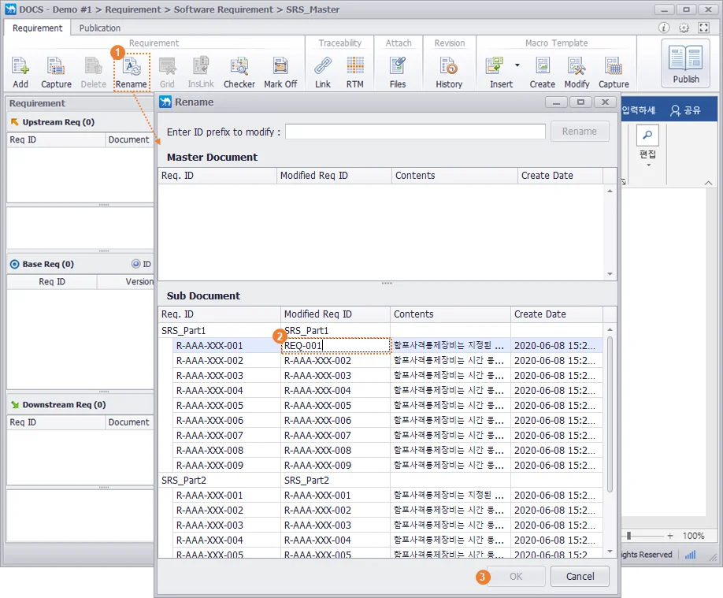 |
등록된 요구사항을 삭제하는 기능이다. 문서 본문 내 요구사항 내용은 삭제되지 않고 SILKROAD 서버에 저장된 요구사항 정보만 삭제된다. 삭제된 요구사항은 Publish 완료 시 반영된다.
① 요구사항 목록(Base Req)에서 삭제하고자 하는 요구사항 식별자를 클릭한다.
② ‘Requirement’ 탭의 ‘Requirement’ 그룹에서 ‘Delete’ 버튼을 클릭한다. 또는 마우스 우클릭하여 콘텍스트메뉴에서 ‘Delete’를 선택한다.
③ ‘OK’ 버튼을 클릭한다.
요구사항 식별자 선택 시, Ctrl, Shift 키를 이용하여 다중 선택이 가능하다. 등록된 요구사항에 해당하는 본문 내용을 삭제하는 경우, 요구사항의 콘텐츠컨트롤이 삭제되며, 저장된 요구사항이 삭제된다. |
|
사용자 PC에 있는 파일을 선택하여 개별 요구사항의 첨부파일로 등록한다. 첨부된 파일은 요구사항관리시스템의 요구사항 정보 창 ‘Attachments’ 탭에서도 열람/다운로드할 수 있다.
① DOCS 화면 좌측 중앙 ‘Base Req’목록에서 파일을 첨부할 요구사항을 선택한다.
② ‘Requirement’탭의 ‘Attach’그룹에서 ‘Files’버튼을 클릭한다.
③ ‘Attachments’화면에서 좌측 상단의 ‘Browse’버튼을 클릭한다.
④ 윈도우즈 탐색기에서 첨부할 파일을 선택한다.
⑤ ‘열기’버튼을 클릭한다.
⑥ ‘OK’버튼을 클릭한다.
|
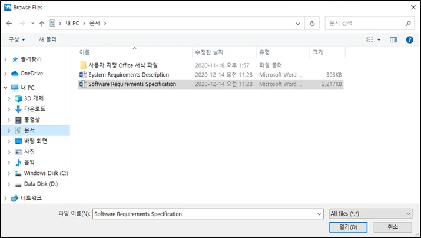 |
|
요구사항에 첨부된 파일을 삭제하는 기능이다.
① DOCS 화면 좌측 중앙 ‘Base Req’목록에서 첨부파일을 삭제할 요구사항을 선택한다.
② ‘Publication’탭의 ‘Attach’그룹에서 ‘Files’버튼을 클릭한다.
③ ‘Attachments’화면의 첨부파일 목록에서 삭제할 파일은 선택한다.
④ 우측 상단 ‘Remove’버튼을 클릭한다.
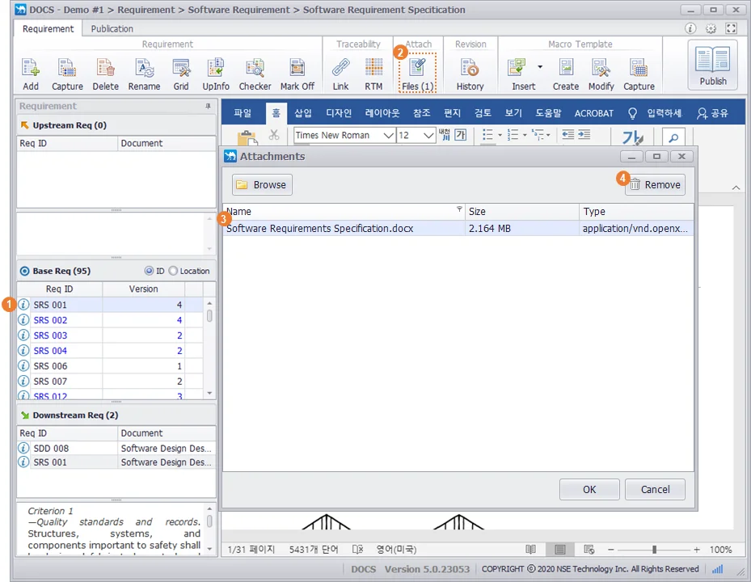 |
요구사항의 변경 이력을 테이블로 생성한다. 해당 정보는 요구사항의 일자, 버전, 설명(Description), 상위 요구사항 정보(Upstream)를 기반으로 생성된다. 테이블을 복사하여 문서 내에 붙여 넣을 수 있다.
① DOCS 화면 좌측 중앙 ‘Base Req’목록에서 변경 이력을 확인하고자하는 요구사항을 선택한다.
② ‘Requirement’탭의 ‘History’그룹에서 ‘Revision’버튼을 클릭한다.
|
‘Revision History’화면에서 우측 하단 ‘Copy’버튼을 클릭하면 Revision History 내용을 클립보드에 복사할 수 있으며, 복사된 내용은 문서에서 붙여넣기(Ctrl+V) 할 수 있다. |
요구사항으로 등록된 영역을 표시하는 기능이다. 요구사항으로 식별된 영역을 요구사항 아이디플래그 (
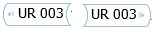
)로 표시하여 문서 내 요구사항 영역을 쉽게 식별한다.① (요구사항 아이디 플래그를 표시하고 싶은 경우) ‘Requirement’탭의 ‘Requirement’그룹에 있는 ‘Mark Off’버튼을 클릭한다.
② (요구사항 아이디 플래그를 감추고 싶은 경우) ‘Requirement’탭의 ‘Requirement’그룹에 있는 ‘Mark On’버튼을 클릭한다.
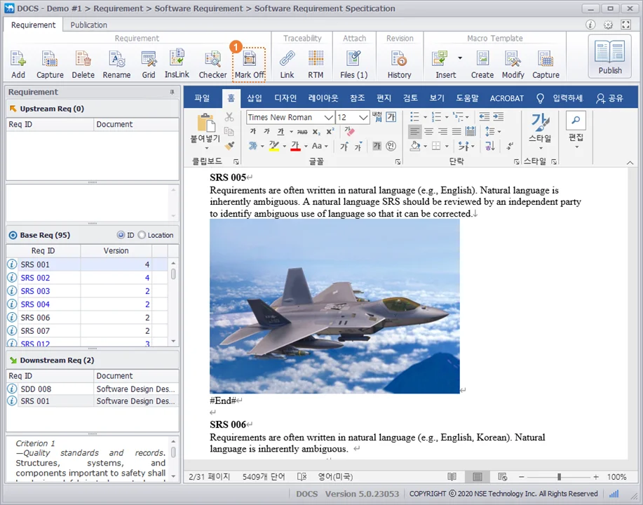 |
‘Mart On‘ 상태로 아이디플레그를 표시한 채 문서 저장(Publish) 시 생성된 PDF에도 아이디플레그 표시가 유지 된다. |
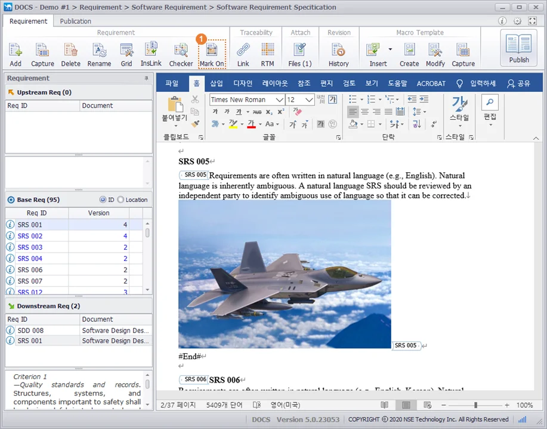 |
여러 요구사항의 속성 정보(Category, Priority, 커스텀 필드 등)를 그리드 기반 요구사항 목록화면에서 편집할 수 있다.
① ‘Requirement’탭의 ‘Requirement’그룹에서 ‘Grid’버튼을 클릭한다.
② 속성 정보를 변경할 항목을 더블클릭하여 속성 정보를 변경한다.
③ OK 버튼을 클릭한다.
상위 요구사항과 추적성이 연결되어 있는 요구사항의 콘텐츠컨트롤 내 상위 요구사항 정보를 텍스트로 추가할 수 있다. 상위 문서 정보는 ‘문서명[요구사항 아이디]’ 형태로 추가된다.
① 요구사항의 콘텐츠컨트롤 내 상위 요구사항 정보를 추가할 위치에 커서를 클릭한다.
② ‘Requirement’탭의 ‘Requirement’그룹에서 ‘InsLink’버튼을 클릭한다.
|
프로젝트 내 현재 문서에 등록된 요구사항 아이디와 동일한 아이디를 가진 요구사항을 검색해 정보를 제공한다. 제공되는 정보는 아이디, 문서 경로와 내용이다.
① 요구사항 작성 후 Add 또는 Capture 기능을 이용해 등록한다.
② ‘Requirement’탭의 ‘Requirement’그룹에서 ‘Checker’버튼을 클릭한다.
‘Checker’ 실행 시 생성되는 ‘RequirementCheckForm’에서 현재 문서의 요구사항 아이디를 수동으로 변경할 수 있다. 변경 후 OK 버튼 클릭 시 저장된다.
|
요구사항 문서 작성 시 표 형태의 반복 사용되는 요구사항 서식을 요구사항 매크로로 생성하여 문서 작성 시 요구사항 입력 및 식별을 용이하게 하는 기능이다. 요구사항 속성 정보(Category, Priority, 커스텀 필드 등) 필드 값을 매크로에 삽입하여 문서 내의 요구사항 서식에서 해당 필드 값을 자동으로 입력할 수 있다.
|
구분 | 명칭 | 설명 |
| Insert | 요구사항 문서 내 매크로 삽입 |
| Create | 새로운 매크로 생성 |
| Modify | 매크로 수정 |
| Capture | 매크로 요구사항 캡쳐(등록) |
매크로를 사용자가 직접 생성할 수 있는 기능이다. 매크로 템플릿 테이블(표) 삽입 후 각 셀에 사용자 필요에 따라 필드를 드래그&드롭을 이용해 배치한다. 매크로 템플릿 테이블(표)에는 항목당 속성(Property)을 1개씩만 추가할 수 있으며, 중복 추가는 허용되지 않는다. 매크로 템플릿에 사용할 수 없는 일부 속성(Grid, Date, Time, Line, Label)은 속성목록에 표시되지 않는다. 매크로 저장 시, 동일한 이름으로는 저장할 수 없다.
① ‘Requirement’ 탭의 ‘Macro Template’ 그룹에서 ‘Create’ 버튼을 클릭한다.
② 콘텐츠 컨트롤 영역 내 안내 문구 텍스트를 삭제하고 표를 삽입한다.
③ ‘Properties’ 영역의 요구사항 속성들을 셀에 드래그하여 추가한다.
④ ‘Register’ 버튼을 클릭한다.
⑤ 매크로템플릿 명칭을 입력한다.
⑥ ‘Register’ 버튼을 클릭한다.
요구사항의 속성(Property)의 설정은 Project Setting 기능에서 제공한다. Custom Field탭에서 요구사항 속성 필드를 담당하는 Requirement Tracker에 사용자 사용 조건에 적합한 필드를 추가/삭제 할 수 있다. Project Setting 기능은 프로젝트 관리자 또는 Admin 권한 이상을 가진 사용자만 접근할 수 있다.
생성된 매크로 템플릿은 프로젝트의 내 메뉴 단위로 공통 적용된다. |
|
|
|
생성된 요구사항 매크로를 요구사항 문서 내에 삽입하고 요구사항으로 식별/등록할 수 있다. ‘Insert’버튼 우측의 펼침단추 ‘▼’ 클릭 시 요구사항 매크로 목록이 생성되고 사용자가 선택하면 본문에 삽입된다. 이후 ‘Insert’ 버튼을 클릭하면 최근 삽입된 매크로 템플릿이 선택되어 삽입된다. 삽입 위치는 마우스 클릭 위치로 기존에 등록된 요구사항의 콘텐츠컨트롤 내부에는 추가할 수 없다.
① 매크로 삽입 위치를 클릭 한다.
② ‘Requirement’ 탭의 ‘Macro Template’ 그룹에서 ‘Insert’ 버튼 펼침단추(▼)를 클릭한다.
③ 삽입하고자 하는 매크로를 선택한다.
DOCS에 생성된 매크로 테이블과 동일한 형태의 테이블(행과 열)을 문서 내에서 식별하여 한 번에 요구사항으로 등록할 수 있다. 본문에 작성된 요구사항 식별자가 동일한 경우에는 요구사항으로 등록할 수 없으며, 해당 요구사항은 빨간색으로 표시된다.
① ‘Requirement’ 탭의 ‘Macro Template’ 그룹에서 ‘Capture’ 버튼을 클릭한다.
② Capture 대상 매크로를 선택한다.
③ ‘Scanning’ 버튼을 클릭한다.
④ ‘Capture’ 또는 ‘OK’ 버튼을 클릭한다.
매크로 요구사항 등록 후 매크로에 추가되어 있는 속성 설정 필드가 활성화되어 입력 및 수정 가능한 상태가 된다. |
매크로는 Word파일로 Export 가능하다. Export된 매크로 파일을 SILKROAD의 다른 프로젝트 DOCS에서 Import하여 재사용 할 수 있다. Export 는 Create을 통해 새로 작성된 매크로와 Modify를 통해 선택된 기존 등록 매크로에 사용된다.
① ‘Marcro Template’ 그룹에서 ‘Create’버튼을 클릭해 매크로를 작성 한다. 또는 ‘Modify‘ 클릭 후 대상 매크로를 선택한다.
② ‘Marcro Template’ 그룹에서 ‘Export’버튼을 클릭한다.
③ 저장할 파일이름을 입력한다.
④ ‘저장’버튼을 클릭한다.
매크로 Export 기능으로 사용자의 PC에 저장한 MS-Word 파일을 불러와서 재사용 할 수 있다.
① ‘Marcro Template’ 그룹에서 ‘Create’버튼을 클릭 후 안내 문구를 삭제 한다. 또는 ‘Modify‘ 클릭 후 대상 매크로를 선택한 뒤 내용을 삭제 한다.
② ‘Import’버튼을 클릭한다.
③ 윈도우즈 탐색기에서 불러올 매크로 파일(.docx)을 선택한다.
④ ‘열기’버튼을 클릭한다.
⑤ ‘Register’버튼을 클릭한다.
⑥ 등록할 이름을 입력한다.
(Mdify를 통해 선택한 매크로의 경우) 기존 등록된 매크로명으로 자동 저장된다.
⑦ ‘Register’버튼을 클릭한다.
|
매크로 템플릿 Export 기능은 매크로 편집 창에서 사용할 수 있다. |
기존 등록되어 있는 매크로를 선택 해 내용을 수정하고 저장하는 기능이다.
① ‘Requirement’탭의‘Macro Template’그룹에서 ‘Modify’버튼을 클릭한다.
② 매크로 목록에서 수정할 매크로의 ‘Modify’버튼을 클릭한다.
③ 매크로 템플릿 수정화면에서 매크로를 수정한다.
④ ‘Register’버튼을 클릭한다.
① ‘Requirement’탭의‘Macro Template’그룹에서 ‘Modify’버튼을 클릭한다.
② 매크로 목록에서 삭제할 매크로의 ‘Delete’버튼을 클릭한다.
③ ‘OK’버튼을 클릭한다.
|
요구사항 간 추적성을 연결하는 기능이다. 요구사항 간 추적성을 연결하기 위해서는 반드시 등록된 요구사항이 존재해야 하며, 1개 이상의 상위 문서와 요구사항 추적성을 연결할 수 있다.
DOCS에서 요구사항 간의 추적성은 하위 문서에서 상위 문서로 연결된다.
① ‘Requirement’ 탭의 ‘Traceability’ 그룹에서 ‘Link’ 버튼을 클릭한다.
② ‘Requirement Traceability Editor’ 화면이 생성되면 좌측 ‘Upstream Requirements’ 영역에서 ‘Backward Link’ 버튼을 클릭한다.
③ ‘Selection of Upstream Document’ 화면에서 상위 문서가 존재하는 프로젝트 및 Phase를 선택한다.
④ 추적성을 연결 할 상위 문서를 선택한다.
⑤ ‘OK’ 버튼을 클릭한다.
⑥ 우측 하위 요구사항을 좌측 상위 요구사항으로 드래그한다.
⑦ ‘OK’ 버튼을 클릭한다.
여러 개의 하위 요구사항을 하나의 상위 요구사항으로 연결하려는 경우, 요구사항을 다중 선택(Ctrl, Shift 이용)한 뒤 상위 요구사항을 클릭하고 화면 중앙 ‘<’ 버튼을 클릭하거나 단축키 ‘Alt + a’를 이용한다. |
|
추적성 연결을 삭제/취소할 시, 삭제/취소 대상 하위 요구사항을 좌측 상위 요구사항에서 우측 하위 요구사항 방향으로 드래그하거나 ‘>’ 버튼을 클릭한다.
추적성 연결 후 ‘Apply’ 버튼 클릭 시, 사용자가 설정한 추적성 연결 정보가 저장되고 Link 팝업은 종료되지 않아 연속적으로 다른 문서의 요구사항과 추적성을 연결할 수 있다.
상위 문서 요구사항 하단에는 현재 작성 문서에서 연결한 추적성이 파란색으로 표시되고, 다른 하위 요구사항과의 추적성이 회색으로 표시된다. |
요구사항 추적성 편집 화면에서 요구사항의 개수가 많은 경우, 요구사항을 필터링 하는 기능이다.
① ‘Requirement’ 탭의 ‘Traceability’ 그룹에서 ‘Link’ 버튼을 클릭한다.
② ‘Requirement Traceability Editor’ 화면 요구사항 목록에서 마우스 우클릭한다.
③ 콘텍스트 메뉴에서 ‘Show Auto Filter Row’항목을 선택한다.
④ ‘REQ (00)’항목과 요구사항 목록 사이의 행(  )을 클릭한다.
)을 클릭한다.
⑤ 필터링 할 유형을 선택하고 조건을 입력한다.
필터 유형은 아래와 같다. |
|
요구사항 추적성 편집화면에서 요구사항 목록을 전체 펼치거나 접는 기능이다.
① ‘Requirement’ 탭의 ‘Traceability’ 그룹에서 ‘Link’ 버튼을 클릭한다.
② ‘Requirement Traceability Editor’ 화면 요구사항 목록 우측 상단 화살표 버튼을 클릭한다.
|
등록된 요구사항 정보창을 통해 개별 요구사항 추적성을 연결하는 기능이다.
① DOCS 화면 좌측 중앙 ‘Base Req’목록에서 요구사항의 정보(Information) 버튼을 클릭한다.
② ‘Requirement Information’화면 Traceability 영역에 있는 ‘Link’버튼을 클릭한다.
③ ‘Add Traceability’화면 좌측 상단 Document 영역에서 요구사항이 존재하는 프로젝트 및 문서를 선택한다.
④ ‘Add Traceability’화면 좌측 하단 Requirement 목록에서 추적성을 연결 할 요구사항을 선택한다.
⑤ ‘OK’버튼을 클릭한다.
|
현재 문서의 하위 요구사항 추적성(Forward Traceability) 상태를 조회할 수 있다. 대상 하위 문서 선택 시 현재 문서의 요구사항과 추적성 연결된 하위 요구사항의 연결 상태와 내용을 확인할 수 있다.
① Requirement’ 탭의 ‘Traceability’ 그룹에서 ‘Link’ 버튼을 클릭한다.
② ‘Requirement Traceability Editor’ 화면에서 우측 상단 ‘Forward Link View’버튼을 클릭한다.
③ ‘Requirement Traceability Editor’화면에서 우측 상단 ‘Forward Link’버튼을 클릭한다.
④ ‘Selection of Downstream Document’화면에서 현재 문서의 하위 요구사항이 존재하는 프로젝트 및 Phase를 선택한다.
⑤ 문서를 선택한다.
⑥ ‘OK’버튼을 클릭한다.
|
요구사항 추적성 매트릭스는 현재 DOCS에 작업 중인 문서를 기준으로 상·하위 요구사항간의 추적성 테이블을 자동으로 생성해주는 기능이다.
① ‘Requirement’ 탭의 ‘Traceability’ 그룹에서 ‘RTM’ 버튼을 클릭한다.
- Backward RTM: 현재 DOCS에서 보고 있는 문서와 상위 요구사항 문서와의 추적성 관계 표시
- Forward RTM: 현재 DOCS에서 보고 있는 문서와 하위 요구사항 문서와의 추적성 관계 표시
– Original View: 요구사항 내용에 포함된 그림, 표, 수식, 텍스트 등 모든 정보를 표시
- Tag-only View: 추적성이 연결된 요구사항의 아이디 및 문서 명을 표시
‘Copy’ 버튼을 클릭하여 요구사항 추적성 테이블을 복사하고 요구사항 문서 내에 붙여 넣기(Ctrl+V)할 수 있다.
|
번호 | 메시지 | 설명 | 해결방안 |
|---|---|---|---|
1 | The same data exists. | 이미 같은 데이터가 존재함 | |
2 | Select items to delete. | 선택된 삭제 대상이 없음 | |
3 | Failed to get body area of document. please try again. | 문서의 Body 영역을 가져오지 못하였습니다. 다시 시도해 주세요. | |
4 | Data does not exist. | 불러올 데이터가 없습니다. | |
5 | Select node. | 노드 선택 안됨 | |
6 | Do you want to delete a selected document(s)? | 선택한 문서를 삭제할지 여부 | |
7 | Failed to connect to server. | 서버에 접속할 수 없습니다. | |
8 | Failed to log in to server. | 로그인에 실패함 | |
9 | An element that can not be captured is selected among captured objects. | 캡쳐된 대상 중, 캡쳐하지 못하는 요소가 선택되어 있습니다. | |
10 | Total {0} macro requirements were captured! | 총 {0} 개의 매크로 요구사항이 등록되었습니다! | |
11 | No element matching the macro template was found. | 매크로 템플릿과 일치하는 요소를 찾지 못함. | |
12 | There is no registered macro template data. | 등록되어 있는 매크로 템플릿 데이터가 없습니다. | |
13 | The table does not exist in the macro template. Please check the macro template. | 매트로 템플릿 안에 테이블이 존재하지 않습니다. 매크로 템플릿을 다시 확인해 주세요. | |
14 | 'Modify' cannot be executed at the current cursor location. | 'Modify'가 현재 커서 위치에서는 실행되지 않습니다. | |
15 | Place the cursor outside a requirement area and try again. | 현재 위치에 매크로 템플릿 수정 영역을 생성하지 못함. 영역 재지정 후 다시 시도해 주세요. | |
16 | Do you want to close this document? | 현재 문서를 닫으시겠습니까? | |
17 | The document has been changed. Do you want to publish it? | 변경된 내용이 있습니다. Publish 하시겠습니까? | |
18 | There is no opened document. | 열려있는 문서가 없음 | |
19 | Failed to delete document. | 문서를 삭제하지 못함 | |
20 | Do you want to delete this document? | 현재 문서를 삭제 하시겠습니까? | |
21 | Do you want to delete sub document(s) as well? | Sub Document를 삭제할지 여부 | |
22 | There is no working document. | 현재 작업중인 문서가 없습니다. | |
23 | The document is already opened. DOCS will close the current document. | 이미 열려있는 문서가 있어서 닫음 | |
24 | Failed to load document. | 문서를 가져오지 못함 | |
25 | Failed to download 'Reuse' document. | Reuse 문서를 다운로드 하는데 실패함 | |
26 | Do you want to restore existing requirement data? | 요구사항 데이터를 복구하시겠습니까? | |
27 | Do you want to restore existing test case data ? | 테스트케이스 복구 여부 | |
28 | This document has no revision. | 이 문서는 개정되지 않았습니다. | |
29 | This document was 'local saved' before it was published. Loadthedocumentasanewdocument? | 0버전이거나 Publish가 되지 않는 문서이므로 새로운 문서로 생성 | |
30 | Loaded successfully. | 문서 로드 성공 | |
31 | The loaded document version is not the latest version. | Load 할 문서의 버전이 최신버전보다 낮음 | |
32 | This document has been changed since saved. Doyouwanttoapplydocument? | Load 문서가 마지막 버전보다 더 낮은 버전일 경우 | |
33 | Check the changes between two versions and load again. | Load 할 문서버전이 낮은 경우 Load를 취소함 | |
34 | Successfully saved. | Local Storage 저장 성공 | |
35 | Do you want to close without register? | 작업중인 Macro Template 을 취소하고 나가시겠습니까? | |
36 | Please turn off Track Changes to use Macro Template. | Macro Template 기능을 사용하기 위해 변경사항추적기능을 꺼주세요. | |
37 | Failed to export 'Macro Template'. | 매크로 템플릿을 Export 하지 못함 | |
38 | This Document saved to {0} | {0} 파일로 Export 하였습니다. | |
39 | Failed to import 'Macro Template'. | 매크로 템플릿을 Import 하지 못함 | |
40 | Macro Template with the same name exists. Please set a different name. | 같은 이름을 가지는 Macro Template 이 존재합니다. 다른 이름으로 설정해 주세요. | |
41 | Enter the Macro Template name. | 저장할 매크로 템플릿 이름을 입력해 주세요. | |
42 | Do you want to register the template you are working on as a requirement? | 현재 작업중인 템플릿을 요구사항으로 등록하시겠습니까? | |
43 | Current Macro Template has been registerd to server. | 매크로 템플릿이 서버에 저장되었습니다. | |
44 | A file name can't contain any of the following characters.\n \\ / : * ? \" < > | | 특수 문자가 포함되어있음 | |
45 | This document has not been published yet. Publishthedocumentfirstbeforeexportit. | Publish 이력이 없는 문서 Export 제한함 | |
46 | This Document saved to {0} | 해당 문서가 {0} 파일로 저장됨 | |
47 | It can not update since information of document was deleted. | 문서 정보가 삭제됨 | |
48 | This is document exported from SILKROAD. Doyouwanttoupdatethedocumentorcreateanewdocument? | SILKROAD 에서 Export 된 문서입니다. 업데이트하시겠습니까?새로문서를생성하시겠습니까? | |
49 | This document has been changed since exported. Doyouwanttoapplydocument? | 문서의 버전이 import할 문서 버전 보다 높음 | |
50 | Check the changes between two versions and import again. | 문서 버전이 더 낮으므로 Import 취소했을 경우 재시도 | |
51 | The document information was not received from the server. | 서버로부터 문서 정보를 받지 못함 | |
52 | Enter password to open file. AfterimportingintoDOCS,thefilebecomesunlocked. | 암호를 입력 암호화된문서암호해제하여저장 | |
53 | There is no document information to update. Doyouwanttoregisterasanewdocument? | Update 할 문서 정보가 없습니다. 새 문서로 등록하시겠습니까? | |
54 | This requirement is already registered. | Content Control 내부에는 요구사항을 등록할 수 없습니다. | |
55 | This requirement is already registered. | Content Control 내부에는 요구사항을 등록할 수 없습니다. | |
56 | The new requirement is not selected. Pleaseconfirmitagain. | 요구사항 영역이 설정되지 않았습니다. 다시 확인해 주세요. | |
57 | You can not specify this area as a requirement. | 해당 영역을 요구사항으로 지정할 수 없습니다. | |
58 | Select requirement to add 'Attachment'. | 선택된 요구사항이 없음 | |
59 | Select one item only. | 두개 이상의 요구사항이 선택되었음. 한개만 선택할 것 | |
60 | You can not proceed with capture because Word's 'Track Changes' feature is enabled. To enable capture, please disable the feature. | 워드의 '문서 내역 추적' 기능이 활성화 되어 있어 캡쳐를 진행할 수 없습니다.\r\n캡쳐를 진행하려면 해당 기능을 비활성화 해 주세요 | |
61 | Total {0} requirements were modified! | 총 {0} 개의 이름이 변경되었습니다! | |
62 | This requirement has no revision. | 해당 요구사항은 리비전이 없음 | |
63 | Select one item only. | 하나만 선택하세요. | |
64 | This document already has master document. | 이미 마스터 문서를 가지고 있음 | |
65 | None exist sub-document. | 서브 문서가 존재하지 않음 | |
66 | Debug mode is enabled. | 디버그 모드가 활성화 되었습니다. | |
67 | Debug mode is disabled. | 디버그 모드가 비활성화 되었습니다. | |
68 | The document has been changed. Doyouwanttopublishit? | 변경된 사항있습니다. Publish 하시겠습니까? | |
69 | Do you want to close DOCS? | 문서를 닫으시겠습니까? | |
70 | Do you want to unlock this document and close DOCS? | 문서를 잠금 풀고 닫으시겠습니까? | |
71 | Error occurred during 'Create' new document. Try again. | 문서를 새로 생성하는 도중 에러가 발생하였습니다. 다시 시도해 주십시오 | |
72 | Error occurred during 'Open' document. The document is invalid or damaged. | 문서를 배치하는 도중 에러가 발생했습니다. 잘못된 문서이거나, 손상된 문서입니다. | |
73 | The document is locked for editing by another user. | 이 문서는 다른사람이 작업중이므로 편집할수 없음 | |
74 | It can not update since information of document was deleted. | 문서가 삭제되었습니다. Publish를 할 수 없습니다. | |
75 | You are not authorized to open this document. Contact your manager for more information. | 문서에 대한 권한이 없습니다. 관리자에게 문의해 주세요. | |
76 | An unhandled exception occurred. DOCS will be closed after creating dump. | 처리되지 않은 예외가 발생하였습니다. 덤프를 생성하고 프로그램을 종료합니다. | |
77 | There is no MS-Word activated. Activate MS-Word and try again. DOCS will be closed. | 정품 활성화된 워드가 존재하지 않아 DOCS 를 종료합니다. 정품등록된 Word를 준비한 후 재 시도 해주시기 바랍니다. | |
78 | This file can not be opened because the status is | Setting된 Status가 아니기 때문에 문서를 열지 못함 | |
79 | This file is not under change request. | BaseLine에는 존재하지만 Change Request가 생성이 되지 않은 파일 | |
80 | Enter the required field. | 요구한 내용을 입력해 주세요. | |
81 | Failed to publish the document. | 작업중인 문서를 퍼블리시 하지 못함. | |
82 | Successfully published! | Publish가 성공함 | |
83 | This work item has already been updated by other user. | 해당 문서는 최신 버전 보다 낮은 버전 문서 | |
84 | You are not authorized to publish this document. Contact your manager for more information. | 문서에 대한 권한이 없습니다. 관리자에게 문의해 주세요. | |
85 | Cannot contain any of the following characters. (\ / : * ? < > |) | 다음 문자는 사용할 수 없습니다. (\, / : * ? < > |) | |
86 | Fail to relocated. Deletesubdocumentlink. | 링크의 위치 변경 실패로 해당 링크 삭제 | |
87 | It can not insert within linked document. | 링크 문서를 입력할 수 없음. | |
88 | Impossible to insert contents in sub-document. | Impossible to insert contents in sub-document. | |
89 | Selected document is already sub-linked. Relocatethesub-linkdocumentatthecursorlocation? | 해당 위치로 서브 문서를 이동하시겠습니까? | |
90 | Aleady added item | Tag가 이미 존재함 | |
91 | Failed to set location information for requirements. | 요구사항의 Location 정보를 설정하지 못함. | |
92 | Reopen file does not exist. | 다시열 파일이 존재하지 않음 | |
93 | Requirement IDs have been duplicated. | 요구사항 ID가 중복되었습니다. | |
94 | Prefixes can not be captured in phrase. | 구절 안 캡처 모드는 Prefixes 로 수행할 수 없습니다. | |
95 | Requirement IDs marked in red have been duplicated. | 요구사항 아이디가 중복되었습니다. 빨간색으로 표시된 아이디를 확인해 주세요. | |
96 | Total {0} requirements were captured! | 총 {0} 개의 요구사항이 등록되었습니다! | |
97 | Total {0} Test Feature were captured! | 총 {0} 개의 요구사항이 등록되었습니다! | |
98 | An error occurred while checking for duplicate requirements. Please contact the administrator. | 요구사항의 중복을 확인하는 도중 에러가 발생했습니다. 관리자에게 문의해 주세요. | |
99 | A wildcard character( * or ?) can not be used alone. | *,?과 같은 와일드카드 문자는 단독으로 검색 불가 | |
100 | Requirement not found. PleasechecktheTagoptions. | 요구사항을 찾지 못함. | |
101 | Do you want to delete selected {0} requirements? | 선택된 요구사항을 삭제 하시겠습니까? | |
102 | Length of document : {0} | 문서의 길이 : {0} | |
103 | Failed to add data due to error occurred during 'Add' Requirement | 요구사항을 생성하는 도중 에러가 발생하여 데이터를 추가하지 못함 | |
104 | This requirement ID already exist. EnterthedifferentrequirementID. | 이미 존재하는 요구사항 이름 입니다. | |
105 | Type this requirement ID. | 요구사항 ID를 입력하세요. | |
106 | Failed to load downstream requirements. The document is invalid or damaged. | Downstream 데이터를 가져오는 도중 에러가 발생했습니다. 문서가 잘못되었거나, 손상된 파일입니다. | |
107 | Failed to load upstream requirements. The document is invalid or damaged. | Upstream 데이터를 가져오는 도중 에러가 발생했습니다. 문서가 잘못되었거나, 손상된 파일입니다. | |
108 | Select downstream requirement to create traceability link. | 선택된 자식 데이터가 없음 | |
109 | Select upstream requirement to create traceability link. | 선택된 부모 데이터가 없음 | |
110 | Link is applied. | 링크 적용 | |
111 | Select requirements to delete traceability link. | 선택된 삭제 데이터가 없음 | |
112 | Link is finished. | 링크 완료 | |
113 | Copied to Clipboard | 클립보드로 복사 | |
114 | Successfully copied to clipboard. | 데이터가 클립보드로 복사됨 | |
115 | Changes in Workspace setting will be applied after DOCS is restarted. | Workspace 변경은 DOCS가 재시작 된 후에 반영됩니다. | |
116 | The moment when the changes are being applied. -Workspace:Afterrestart -Autosave:Immediately | Workspace : 재시작 후 반영, Autosave : 즉시 반영 | |
117 | Select item to delete. | 선택된 삭제 대상이 없음 | |
118 | This document has no comparable version. | 비교 대상이 없음 | |
119 | The requirement area has been deleted by the user. | 사용자에 의해 요구사항 영역이 삭제되었습니다. | |
120 | Requirements data that contains invalid data. Delete and re-create it. | 잘못된 데이터를 포함하는 요구사항 데이터입니다. 삭제후 다시 생성해 주십시오. | |
121 | Failed to execute Word. | 워드를 실행하지 못함. | |
122 | Invalid password. | 유효하지 않은 비밀 번호 |
구분 | 명칭 | 설명 |
| ‘Document List’ | 요구사항 Phase, 요구사항 문서 목록 |
| 메뉴 바 | 요구사항관리시스템(Web) 기능 버튼 영역 |
| View(뷰) 탭 | Document View(문서 뷰) : 요구사항 문서 뷰 Grid View(그리드 뷰) : 등록된 요구사항 항목 뷰 Coverage View(커버리지 뷰) : 상·하위 요구사항 추적성(표) 뷰 |
| Viewer |
|
Phase는 문서를 담는 폴더 개념이며, 상위/하위 Phase는 생성할 수 없다. 생성된 Phase 더블클릭 시, Phase 정보창이 생성되며 입력 정보를 수정할 수 있다. 단, Phase 생성자, 프로젝트 관리자 및 Admin 권한을 사용자 외에는 수정할 수 없다.
Phase는 하위 문서와 함께 드래그&드롭 또는 Publication Order를 통해 위치 이동이 가능하며, Phase에 하위 문서가 존재하는 경우 삭제할 수 없다.
① Requirement Management 화면 좌측 ‘Document List’에서 ’New Phase‘ 버튼을 클릭한다.
② 또는, Requirement Management 화면 좌측 ‘Document List’의 빈 공간에 마우스 우클릭을 하여 New Phase를 선택한다.
③ Phase Name 항목(필수)을 입력한다.
④ ‘OK’ 버튼을 클릭한다. ‘Apply‘버튼 클릭 시 저장 후 창이 닫히지 않고 연속해서 수정할 수 있다.
|
Phase 의 삭제 기능은 ‘Project Manager‘ 역할 또는 사용자 권한 ’Admin’ 이상을 부여받는 사용자에 제공된다. 하위 문서를 가진 Phase는 삭제할 수 없고, 다른 Phase로 문서를 드래그&드롭 해 이동시키거나 삭제한 뒤 Phase를 삭제할 수 있다.
① 문서가 존재하지 않는 Phase를 우클릭 하여 생성되는 컨텍스트 메뉴의 ‘Delete Item’ 버튼을 클릭한다.
② 또는, 문서가 존재하지 않는 Phase를 더블 클릭하여 생성되는 정보창 좌측 하단의‘Delete’ 버튼을 클릭한다.
|
Phase 단위로 속한 문서의 사용자 권한을 변경한다. 많은 문서의 사용자 권한을 손 쉽게 일괄/개별 변경할 수 있다.
① ‘Document List’에서 Phase를 우클릭한다.
② ‘Phase Authority Setting’ 버튼을 클릭한다.
③ 팝업 창 좌측 ‘Document List’에서 사용자 권한을 조정할 대상 문서를 선택/해제 한다.
④ 우측 영역에서 프로젝트 참여중인 사용자의 문서 권한을 조정할 수 있다(Admin, Write, Read, None).
⑤ 또는, 그룹의 권한을 조정하여 하위에 속한 인원 전체에 대해 일괄적으로 Authority를 조정할 수 있다. 권한 조정 시 경고창이 생성된다. (Do you want to overwrite all group members?).
문서의 사용자 권한은 해당 메뉴에 설정된 사용자 권한을 넘어설 수 없다. 해당 메뉴에 설정된 사용자의 권한이 ‘Write’ 일 때, 문서 사용자 권한 ‘Admin’을 부여할 수 없다. 특정 사용자의 문서 권한을 ‘Admin’으로 상향하고자 할 때 해당 메뉴의 권한을 ‘Admin’으로 상향하는 작업이 선행되어야 한다. |
SILKROAD 문서 편집기(DOCS)를 실행하기 위해서는 SILKROAD Agent 파일이 사용자의 PC에 반드시 설치되어야 한다. Agent가 설치되어 있지 않거나 업데이가 필요할 때 ‘DOCS’ 버튼 클릭 시 다운로드 또는 업데이트 절차를 진행 할 수 있다. Requirement 메뉴에 대한 사용자 권한이 ‘Write’ 이상일 경우 ‘DOCS’를 실행할 수 있다.
① 좌측 ‘Document List’에서 Phase를 우클릭하여 ‘Create Document’를 선택한다.
② 또는 ‘Document List’ 우측 ‘New Document’ 메뉴의 펼침버튼(▼)을 클릭하여 ‘Create Document’를 선택한다.
③ 또는 좌측 ‘Document List’에서 문서를 선택한 후 우측 문서 뷰어 창 상단의 ‘DOCS’ 버튼을 클릭한다.
|
DOCS 실행 기능설명은 ‘2.1 요구사항 문서 관리 – 2.1.1 DOCS 실행’참조 |
문서 그리드 화면(Grid View) 필터(Filter)에 표시되는 요구사항의 속성 필드의 표시 유무를 설정한다. 요구사항은 사용자의 필요에 따라 많은 수의 속성 필드를 가질 수 있다. 이 필드는 문서의 종류에 따라 필요한 필드와 필요하지 않은 필드로 나뉜다. 이 경우 ‘Field Dependency Setting’은 사용자의 설정에 부합하는 문서를 검색하고 그리드 화면 필터에 표시할 요구사항 속성 필드를 선택할 수 있다.
① Document List에서 ‘Setting’ 클릭 후 ‘Field Dependency Setting’을 실행한다.
② ‘New Filter’버튼을 클릭해 필터 이름을 입력하고, ‘OK’버튼을 클릭한다.
③ 문서 검색 조건으로 문서의 속성 필드(Name, Abbreviation 등)를 선택하고, 조건을 설정한다.
④ 하단 요구사항 속성 필드 목록에서 그리드 화면 필터에 표시(Visible)할 필드를 체크 한다.
⑤ 상단 ‘Apply grid filter’를 체크하고, ‘OK’ 버튼을 클릭한다.
설정을 마치고 문서 검색 조건에 부합하는 문서를 선택해 그리드 화면에서 필터 클릭 시, 사용자가 표시(Visible)하고자 설정한 필드만 표시된다.
|
PLM 도구와 데이터 연동을 위하여 문서에 포함된 요구사항과 추적성 정보를 XML 파일로 개인 PC에 다운로드 한다. 병합한 문서를 다운로드 하는 경우, 병합되어진 서브 문서의 문서 및 요구사항 정보를 포함한다.
① Document List에서 ‘Function’ 클릭 후 ‘PML Export’를 실행한다.
② 다운로드 대상 문서를 체크 해 선택한다.
③ ‘Include Trace’ 옵션 체크 시 요구사항의 추적성 정보를 포함한다.
④ ‘Download‘ 버튼을 클릭한다.
⑤ 문서명 검색, Baseline 필터를 통해 대상 문서 선택을 지원한다.
병합 문서 다운로드 시 마스터 문서가 병합 문서 생성 ‘Product’ 된 상태에서 다운로드 해야 한다. |
실크로드에서는 문서 내 동일한 요구사항 아이디를 등록할 수 없지만, 다른 문서에서는 동일한 요구사항 아이디가 등록 가능하다. 이런 경우 중복된 요구사항 아이디를 확인하고 수정하는 작업을 지원하기 위하여 프로젝트 내에서 중복된 요구사항 아이디를 검사하는 기능이다.
① Document List에서 ‘Function’ 클릭 후 ‘ID Checker’를 실행한다.
② Requirement ID Checker 창에서 중복된 요구사항 아이디 정보(Phase/Document/Editor)를 확인한다.
‘ ’ 버튼을 클릭하여 문서 속성 값을 지정해 해당하는 문서를 검색할 수 있다. 필터 적용 시 아이콘은 ‘’, 필터 미적용 시 ‘’상태로 변경된다.
’ 버튼을 클릭하여 문서 속성 값을 지정해 해당하는 문서를 검색할 수 있다. 필터 적용 시 아이콘은 ‘’, 필터 미적용 시 ‘’상태로 변경된다.
① 문서 속성 필드 중 필터 적용 필드를 선택한다.
② 필드 Value 영역을 클릭 후 설정값을 선택 또는 입력 한다.
③ ‘Save’버튼을 클릭한다.
④ ’Reset’ 버튼을 클릭하면 필터 결과를 초기화 할 수 있다.
관리자는 Project Setting의 Custom Filed 설정을 통해 문서의 속성 필드를 추가 할 수 있다. |
|
Document List에서 문서 및 Phase의 위치 이동은 기본적으로 드래그&드롭으로 가능하다. 단, 드롭 시 마우스의 위치에 따라 이동되지 않는 경우가 발생할 수 있어 이를 지원하기 위해 ‘Order Setting’ 기능을 제공한다.
① ‘Order Setting’ 실행 아이콘 ‘’ 을 클릭 한다.
② 위치를 이동할 문서 또는 Phase를 클릭한다.
③ ‘Up/Down’ 버튼을 클릭해 위치를 이동한다.
④ ‘Apply Index’ 버튼을 클릭해 변경된 위치를 저장한다.
여러 문서 및 Phase의 위치를 변경하고 ‘Apply Index’를 실행 해 한번에 반영할 수 있다.
잠금 설정(Lock) 상태의 문서는 위치 이동이 금지되고, 잠금 해제(Unlock) 후 위치를 변경할 수 있다. Document List Item은 우클릭 ‘Move To’기능으로도 위치 이동이 가능하다. |
‘Document List’에서 하나의 문서를 선택하는 경우, PDF 기반으로 작성 내용을 표시하는 Document View가 실행 된다. 문서의 버전을 변경하여 버전별 문서 내용을 열람할 수 있다.
문서 하단에는 해당 문서에 등록된 요구사항 목록과 추적성 정보가 표시된다. 단, 선택된 문서가 Master 문서인 경우 Sub Document가 가진 요구사항이 목록에 같이 표시되며, 문서 병합을 실행할 수 있는 ‘Product’버튼이 생성된다.
① ‘Document List’에서 열람 대상 문서를 클릭한다.
DOCS를 통해 저장(Publish) 시 PDF 생성 옵션으로 ‘Server’, ‘Not now’ 선택한 문서는 PDF가 생성되지 않아 내용이 표시되지 않을 수 있다. 이때, 수동으로 PDF 생성 버튼을 이용해 내용을 표시할 수 있다. |
|
구분 | 명칭 | 설명 |
| Information | 문서 정보 |
| Version | 문서 버전 목록 |
| DOCS | DOCS 실행 |
| Revision History | 문서 개정 이력 |
| Compare | 문서 버전별 비교 |
| Product | |
| Download | 문서 파일 다운로드 (PDF) ※ Project Manager또는 Admin은 MS-Word 형식으로 다운로드 가능 |
Lock | 문서 잠금/잠금 해제 설정 | |
| Authority Setting | 문서 접근 및 편집 권한 설정 |
문서 정보창은 해당 문서를 작성하고 저장(Publish) 시점에 설정한 속성 및 정보를 표시한다.
① ‘Document List’에서 문서를 선택한다.
② 문서 뷰어 좌측 상단의‘ ’버튼을 클릭한다.
’버튼을 클릭한다.
③ 또는, 문서 우클릭 후 ‘Detail Info’ 버튼을 클릭한다.
|
DOCS를 통해 저장(Publish) 된 문서의 버전 목록을 제공한다. 버전은 PDF 생성 유무를 나타내는 아이콘과 함께 표시되며, 버전 클릭 시 해당 버전에 해당하는 문서 내용을 보여준다.
① ‘Document List’에서 문서를 선택한다.
② 문서 뷰어 좌측 상단의‘Version’ 펼침단추를(▼) 클릭하여 문서 버전을 선택한다.
③ 문서 버전을 선택하면 해당 내용과 요구사항 목록이 표시된다.
문서 버전 변경 시 해당 버전에 존재하는 요구사항 목록을 표시하나 요구사항의 내용은 최신 상태를 유지한다. |
|
SILKROAD에 저장된 가장 최신 버전의 문서를 DOCS를 통해 편집할 수 있다. 최신 버전이 선택되지 않은 상태에서는 DOCS 버튼이 비활성화 된다. 문서의 편집은 해당 프로젝트 참여자 중 메뉴와 문서 권한이 ‘Write’ 이상일 때 가능하다.
① 좌측‘Document List’에서 문서를 선택한다.
② 문서 뷰어 좌측 상단의‘DOCS’버튼을 클릭하여 문서편집기(DOCS)를 실행한다.
|
문서의 Publish 이력 관련 정보를 제공한다. Project Manager 역할 사용자 또는 사용자 권한 ’Admin’ 이상의 권한을 가진 사용자는 최신 버전을 제외한 이전버전 삭제 기능이 제공된다. 부가적으로 문서 버전별 다운로드(Download) 기능과 지정한 문서 버전간 비교(Compare) 기능, 이력 정보 출력(Revision Download) 기능을 제공한다.
① 좌측‘Document List’에서 문서를 선택한다.
② 문서 뷰어 상단의‘Revision History’버튼을 클릭하면 문서 Publish 이력을 조회할 수 있는 ‘Revision History’창이 생성된다.
③ ‘Compare’기능을 이용하여 현재 문서의 버전 별 비교가 가능하다.
④ ‘Download’기능을 이용하여 선택(클릭)한 버전에 해당하는 문서를 Word 파일로 다운로드 한다.
- Word Download 기능은 프로젝트 관리자 또는 사용자 권한 ‘Admin’이상 사용자에 제공된다.
⑤ ‘Revision Download’기능을 이용하여 문서 이력을 Word 파일로 다운로드 한다.
|
문서의 버전과 버전 사이에 내용 변경(추가/삭제) 내역을 표시한다. 사용자는 기준 버전과 비교 대상 버전을 선택해 Compare 버튼을 클릭 해 비교 내역을 확인할 수 있다. 비교 내역은 ‘Download‘ 기능을 통해 PDF로 저장할 수 있다.
① 좌측‘Document List’에서 문서를 선택한다.
② 우측 문서 뷰어 상단의 ‘Compare’ 버튼을 클릭한다.
③ 비교하고자 하는 버전(기준 버전-Base Version)/(비교 버전-Compare Version)을 선택한다.
④ ‘Compare’버튼을 클릭한다.
⑤ 변경 내용은 빨간색으로 표시되며, 추가/수정한 텍스트의 경우 밑줄 표시를 삭제된 문서는 취소선 표시를 제공한다.
⑥ ‘Download’기능을 이용하여 비교 내역을 PDF로 저장한다.
|
마스터 문서에 포함된 서브 문서들을 하나의 문서(Word, PDF)로 병합한다. 병합된 문서에는 마스터 문서의 머리글/바닥글, 페이지 번호 등이 적용된다. ‘Publication List’ 문서 목록의 버전 영역을 클릭 해 마스터 문서를 제외한 모든 서브 분서의 버전을 선택해 병합 문서를 생성할 수 있다.
① 병합 대상 문서중 최상위 문서(마스터 문서)를 클릭한다.
② ‘Product’버튼을 클릭한다.
③ ‘Publication List’ 화면에서 ‘Download’버튼을 클릭한다.
④ ‘Producting documents might take few minutes.’안내팝업에서 ‘Yes’ 또는 ‘No’를 클릭한다.
(Yes 선택 시) 병합된 단일 문서 Word 파일 생성
((No 선택 시) 병합된 단일 문서 생성 기능 취소
(Convert to PDF 선택 시) Word 파일외 PDF 파일 추가 생성
|
병합 대상 문서(서브 문서)는 버전을 지정해 병합 문서를 생성할 수 있다.
① 병합 대상 문서중 최상위 문서(마스터 문서)를 클릭한다.
② ‘Product’버튼을 클릭한다.
③ ‘Publication List’ 화면에서 문서 버전 셀을 클릭한다.
④ ‘Revision History’ 화면에서 병합 대상 버전을 선택한다.
⑤ ‘Revision History’ 화면에서 ‘Apply‘ 버튼을 클릭 한다.
⑥ ‘Publication List’ 화면에서 ‘Download’버튼을 클릭한다.
서브 문서의 버전 변경만을 반영해 병합 문서를 생성한다. |
프로젝트 참여자 중 문서 권한 ‘Write‘ 이상인 사용자는 문서 잠금/해제 기능을 사용할 수 있다. 문서 잠금/해제 상태는 이미지(잠긴 상태:  , 잠기지 않은 상태: )로 표시된다. 사용자가 잠금 설정(Lock) 한 문서는 해당 사용자가 잠금 해제(Unlock)하는 것을 기본으로 한다. 다른 사용자가 잠금 설정한 문서는 (잠긴 상태:
, 잠기지 않은 상태: )로 표시된다. 사용자가 잠금 설정(Lock) 한 문서는 해당 사용자가 잠금 해제(Unlock)하는 것을 기본으로 한다. 다른 사용자가 잠금 설정한 문서는 (잠긴 상태:  +잠금 설정한 사용자명)로 표시되고, 일반적으로 다른 사용자가 잠금 해제 할 수 없다.
+잠금 설정한 사용자명)로 표시되고, 일반적으로 다른 사용자가 잠금 해제 할 수 없다.
구분 | 명칭 | 설명 |
| Lock | 문서 상태 : 잠겨 있지 않음 잠금 설정 : 모든 사용자가 잠금 설정 가능 문서 편집 : 모든 사용자가 문서 편집 가능 |
| Unlock | 문서 상태 : 현재 사용자가 문서를 잠금 설정한 상태 잠금 해제 : 현재 사용자 및 관리자가 잠금 해제 가능 문서 편집 : 현재 사용자 및 관리자만 문서 편집 가능 |
| Locked by other user | 문서 상태 : 다른 사용자에 의해 문서가 잠금 설정된 상태 잠금 해제 : 문서를 잠근 사용자 및 관리자가 잠금 해제 가능 문서 편집 : 문서를 잠근 사용자 및 관리자만 문서 편집 가능 |
프로젝트 관리자(Project Manager) 또는 관리자(Admin) 권한을 가진 사용자는 다른 사용자가 잠금(Lock) 설정한 문서를 잠금 해제(Unlock) 할 수 있다. |
프로젝트 참여자들의 각 문서에 대한 사용 권한을 설정하는 기능으로 프로젝트 관리자(Project Manager) 또는 관리자(Admin) 권한을 가진 사용자만 권한 설정을 수행할 수 있다.
① ‘Document List’에서 문서를 선택하고 ‘Authority Setting’ 버튼을 클릭한다.
② ‘Authority Setting Window’창이 생성된다.
③ ‘Authority’셀의 펼침단추를 클릭하여 프로젝트 참여 사용자의 해당 문서에 대한 권한을 설정한다.
- Admin : 관리자 권한으로 읽기/쓰기/삭제 권한과 잠금(Lock) 문서에 대한 편집 가능(프로젝트 관리자를 제외한 다른 사용자에 의해 잠긴 문서 잠금 해제 권한)
- Write : 읽기/쓰기 가능
- Read : 읽기만 가능
- None : 문서에 접근 권한이 없으며, 문서 내용 열람 불가
① ‘Save’버튼을 클릭하여 저장한다.
|
프로젝트 참여자의 ‘문서 권한’은 대상 사용자에게 설정된 ‘메뉴 권한’을 넘어설 수 없다. 또한, 프로젝트 관리자와 사용자 권한 ‘Admin’인 사용자의 문서권한은 ‘Admin’으로 고정되어 변경할 수 없다. 메뉴 권한의 설정과 확인은 ‘Project Setting-Role&Authority를 참조’ |
선택한 문서에 등록된 요구사항 목록(Base Requirement)과 추적성 연결된 상﹡하위 요구사항, Test Feature, Test Case, Source File의 목록(Linked ID and Documents) 그리고 그 내용을 표시한다. 요구사항 목록은 필터 기능을 이용해 필터링할 수 있다.
|
구분 | 명칭 | 설명 |
| 요구사항 목록 | 현재 문서에 등록된 요구사항 목록 |
| 요구사항 검색 키워드 입력창 | 요구사항 아이디 검색 창 |
| 요구사항 필터 버튼 | 요구사항 속성 값(value) 기준 필터 기능 |
| 요구사항 상세 정보 창 실행 버튼 | |
|
| DOCS 실행 버튼 |
| 추적 요구사항 목록 | 상·하위 추적 요구사항 목록 |
| 추적 요구사항 내용 | 추적 요구사항 내용 표시 |
요구사항 아이디 검색 키워드를 입력한다. 해당 키워드를 포함하는 요구사항이 표시되고 필터가 적용된 상태로 필터 아이콘이 ‘’ 상태로 변경된다. 초기화를 위해 ‘ ’버튼을 클릭하거나 필터 실행 후 ’Reset’ 버튼을 클릭하면 필터 결과가 초기화되고 필터 아이콘이 ‘’상태로 변경된다.
’버튼을 클릭하거나 필터 실행 후 ’Reset’ 버튼을 클릭하면 필터 결과가 초기화되고 필터 아이콘이 ‘’상태로 변경된다.
|
‘’ 버튼을 클릭하여 요구사항 속성 값을 기준으로 요구사항을 검색할 수 있다. Apply를 클릭하여 요구사항을 필터 한다. ‘Reset’ 버튼을 클릭하면 필터 결과를 초기화 할 수 있다. 필터가 적용 유무는 필터 아이콘을 통해 알 수 있다. 필터 적용 시 아이콘은 ‘’, 필터 미적용 시 ‘’상태로 변경된다.
① 필터 버튼을 클릭한다.
② 선택 옵션을 체크하고 조건을 입력한다.
③ ‘Apply’ 버튼을 클릭한다.
|
요구사항 정보창은 요구사항 상세 내용 파악 및 상·하위 추적 요구사항 정보를 통해 요구사항 변경에 따른 영향도 분석을 수행할 수 있다. 요구사항 목록의 ‘ ’ 버튼을 클릭하면 선택된 요구사항의 정보창이 생성된다.
’ 버튼을 클릭하면 선택된 요구사항의 정보창이 생성된다.
구분 | 명칭 | 설명 |
| 요구사항 내용 | 현재 선택된 요구사항의 내용 |
| Up/Down Stream | 선택된 요구사항 기준 상/하위 추적성 표 |
| Report View | 선택된 요구사항 기준 상위 추적성 리포트 (좌측 네모 안쪽으로 들어갈수록 하위이며 동일 수준의 요구사항은 같은 색으로 표시됨) |
| Impact Analysis | 선택된 요구사항 기준 상/하위 추적성 다이어그램 (Traceability 모듈에서도 확인 가능) |
| 공통 정보창 탭 | Properties, Activities, Relations, Change Request, Code & Standards, Meeting Minutes, Attachments 탭을 제공 |
DOCS를 통해 등록된 요구사항과 속성 정보를 표로 나열하여 확인할 수 있다. ‘Document List’에서 문서를 선택 후, 우측 문서 뷰어 상단의‘Grid View’ 버튼을 클릭한다. 각 요구사항의 ‘속성(Properties)’을 기준으로 필터를 적용하여 요구사항 목록을 구성 할 수 있다. 필터 적용 사항은 화면이나 Excel 출력 시 적용된다. ‘Excel Export’ 버튼을 이용해 요구사항 목록을 Excel 파일로 출력 시 요구사항 내용 중 표, 그림, 수식은 표시되지 않는다. Excel 파일 외에도 Excel xml. CSV, TSV, HTML 출력을 지원한다.
요구사항 우클릭을 통해 대상 요구사항의 정보창과 DOCS를 열 수 있다. DOCS를 통해 열린 문서는 본문에서 우클릭한 대상 요구사항의 위치에 자동으로 포커스가 이동되어 표시한다.
|
구분 | 명칭 | 설명 |
| Version | 문서 버전 목록 |
| Filter | 조건 검색창 열기/닫기 - Category, Priority, Content, Search Tag(Default)를 기준으로 검색 필터링 |
| Export | 요구사항 목록 Excel xlsx, Excel xml, CSV, TSV, HTML 파일 형식으로 내보내기 |
| Page | 요구사항 목록 페이지 표시 |
| Display Count | 화면 표시 요구사항 수 설정 |
Grid 화면에 표시된 요구사항의 속성 칼럼을 설정한다. 속성을 체크/해제 해 표시할 정보를 조절한다. 해당 설정은 화면 새로 고침 시 초기화 된다.
① 칼럼(셀) 펼침 단추를 클릭한다.
② ‘Columns’버튼을 선택한다.
③ 그리드에서 표시하고자 하는 칼럼(셀)을 체크한다.
요구사항의 속성 필드를 기준으로 해당하는 요구사항을 필터링 한다. Export 시 필터 결과를 반영해 출력한다.
① ‘’버튼을 클릭하여 필터 조건 창을 연다.
② 필터 조건을 선택한다.
③ 후 우측의‘Search’ 버튼을 클릭하여 필터 조건을 적용한다.
④ 필터 조건에 따른 검색 결과가 그리드에 표시된다.
적용된 필터를 초기화하기 위해서는 ‘Reset Filter’버튼을 클릭해 입력된 필터 조건을 초기화 하고 ‘Search’버튼을 클릭한다. 또는 ‘Reset Filter‘우측에 위치한 ’▼‘버튼을 클릭해 ’Reset Filter&Search‘버튼을 클릭해 초기화할 수 있다.
그리드 뷰에 표시된 요구사항을 MS-Excel로 내보내는 기능이다. 요구사항 목록에 필터가 적용된 경우 해당 결과를 반영해 출력한다.
① ‘Export’버튼을 클릭한다.
② MS-Excel 파일을 사용자 PC에 다운로드 한다.
그리드의 요구사항 목록은 Excel xlsx, Excel xml, CSV, TSV, HTML 형식의 출력을 제공한다. |
‘Document List’의 선택된 요구사항 문서를 기준(Base Level)으로 레벨(Level=Depth=Phase) 별 상·하위 추적 요구사항을 표시한다. 요구사항 클릭 시 확대되어 내용을 표시한다(표, 그림, 수식을 정상 표시함).
① ‘Document List’에서 하나의 문서를 클릭한다.
② 우측 상단의 ‘Coverage View’를 클릭한다.
요구사항 문서 사이에 연결된 상/하위 추적 정보를 표시한다. Base Level 문서를 기준으로 Level 확장 시 상위 문서 요구사항은 주황색 화살표, 하위 문서 요구사항은 녹색 화살표와 함께 문서명과 내용을 표시한다.
① ‘Coverage View’의 ‘Vertical Coverage’ 탭을 클릭한다.
② ‘ ’ 버튼을 클릭하여 레벨(Level=Depth=Phase)을 추가한다.
’ 버튼을 클릭하여 레벨(Level=Depth=Phase)을 추가한다.
③ ‘ ’ 버튼을 클릭하여 레벨(Level=Depth=Phase)을 삭제한다.
’ 버튼을 클릭하여 레벨(Level=Depth=Phase)을 삭제한다.
|
요구사항 문서와 추적성이 연결된 문서 중 Level을 확장할 대상을 선별하도록 옵션을 설정한다. Level 추가 시 Base Level 문서와 추적성 연결된 상/하위 문서 중 사용자가 선택한 특정 문서와의 추적성 정보만을 표시한다.
① ‘ ’를 클릭한다.
’를 클릭한다.
② ‘Select Document’ 옵션을 체크 한다.
③ ‘’ 버튼을 클릭한다.
④ ‘Covered Document List’창에서 문서를 선택한다.
⑤ ‘Apply’버튼을 클릭한다.
|
사용자가 설정한 ‘Select Document’옵션 체크는 수동으로 체크 해제하거나 화면을 새로 고침(F5 새로 고침 또는 다른 메뉴 이동 후 복귀)하기 전까지 유지된다. 따라서 옵션 설정 후 Level 추가 시 마다 상/하위 문서를 선택하게 된다. |
요구사항과 사용자에 의해 추가된 Level의 상/하위 요구사항을 화면에 표시하는 상태를 설정한다.
두 가지 옵션을 이용해 ID Tag 만을 간단하게 표시하거나 추가된 Level 중 일부만을 화면에 표시하도록 할 수 있다.
① ‘ ’를 클릭한다.
’를 클릭한다.
② ‘Show ID only’ 옵션을 체크한다.
③ 요구사항 문서명과 내용을 제외한 ID만 표시된다.
④ ‘Select Level’을 클릭한다.
⑤ 추가된 Level이 콤보박스에 버튼 형태로 나열된다.
⑥ 추가된 Level을 닫거나 추가 해 화면에 사용자가 원하는 Level 정보만 표시한다.
사용자가 설정한 ‘Show ID only’ 옵션과 ‘Select Level’ 설정은 수동으로 체크 해제하거나 화면을 새로 고침(F5 새로 고침 또는 다른 메뉴 이동 후 복귀)하기 전까지 유지된다. |
|
Coverage View Excel Export 시 사용자 편의에 따라 요구사항 셀 병합 및 서브 문서명을 마스터 문서명으로 표시하는 기능이다.
① ‘Export Options’를 클릭한다.
② ‘Cell Merge’ 옵션을 체크/해제한다.
- ‘Cell Merge’옵션 체크 : 실크로드 화면과 같이 요구사항 셀이 Merge되어서 출력
- ‘Cell Merge’옵션 체크 해제 : 요구사항 셀 Merge 해제되어 출력
|
③ ‘Display Master Document Name’을 체크/해제한다.
- ‘Display Master Document Name’옵션 체크 : Sub 문서명이 Master 문서명으로 출력
- ‘Display Master Document Name’옵션 체크 해제 : Sub 문서명을 그대로 출력
|
‘Cell Merge’옵션은 Coverage Export한 Excel 파일을 사용자가 편집하기에 유용하며, ‘Display Master Document’기능은 Master-Sub 문서에서 Sub 문서는 Master 문서의 하위 내용으로 Coverage 제출 시 Master 문서 명으로 변경하는 작업을 지원해준다. |
현재 선택된 문서와 추적성이 연결된 상‧하위 문서들의 요구사항을 검색한다. ID 필드는 모든 레벨(Level=Depth)을 대상으로 필터링하며, Document 필드, From/To는 오직 Level 1 Up/Downstream 이상의 레벨만을 대상으로 한다.
① ‘Filter’버튼을 클릭한다.
② ‘Filter’영역이 펼쳐지면 아래 조건에 따라 검색 옵션을 선택한다.
③ ‘Search’버튼을 클릭한다.
④ 검색 결과가 표시된다.
|
현재 화면에 보이는 커버리지 뷰를 MS-Excel 파일로 로컬 PC에 다운로드 하는 기능이다. 필터, 뷰 옵션, 레벨 추가 등이 적용된 커버리지 뷰를 반영해 Excel로 다운로드 한다.
① 우측 상단의‘Screen Export’버튼을 클릭한다.
② 현재 화면에 보이는 커버리지 뷰가 Excel 양식으로 로컬 PC에 다운로드 된다.
사용자가 선택한 범위의 커버리지 정보를 MS-Excel 파일로 로컬 PC에 다운로드 하는 기능이다. ‘Full Export’를 클릭하여 옵션 창을 띄운 후 추적성 레벨과 요구사항 수, 표시 형식을 설정하고 다운로드 한다.
① 출력할 추적성 Level의 수를 선택한다.
② 출력할 추적성 Level을 선택한다.
③ 출력할 요구사항 수를 선택한다.
④ 출력할 요구사항 범위를 선택한다.
⑤ 표시 형식을 선택한다.
⑥ ‘Download’버튼을 클릭한다.
구분 | 명칭 | 설명 |
| Total Level | 기준문서부터 지정된 depth까지 모두 Excel 다운로드 |
| Range-Level | 선택한 depth만 Excel 다운로드 |
| Total Req’s | 첫 번째 요구사항부터 정해진 숫자만큼의 요구사항 Excel 다운로드 |
| Range | 정해진 숫자 범위의 요구사항을 Excel 다운로드 |
| Tag ID only | 요구사항의 내용을 제외한 ID만이 Excel 다운로드 |
| Export to Excel | 기본적으로 Excel 다운로드를 제공 |
현재 화면에 보이는 커버리지 뷰를 Word 파일로 로컬 PC에 다운로드 하는 기능이다. 필터, 뷰 옵션, 레벨 추가 등 적용된 설정을 반영해 word로 다운로드 한다.
① ‘Export to word’ 버튼을 클릭한다.
② MS-Word 파일이 사용자 PC에 다운로드 된다.
요구사항, 테스트 계획, 테스트 케이스간의 추적성 정보 및 테스트 수행 결과를 확인할 수 있다.
① ‘Coverage View’의 ‘Horizontal Coverage’탭을 클릭한다.
② ‘ ’ 또는 ‘
’ 또는 ‘ ’버튼을 클릭하여 레벨(Level=Depth=Phase)을 확장/축소 한다.
’버튼을 클릭하여 레벨(Level=Depth=Phase)을 확장/축소 한다.
③ 요구사항-테스트케이스-테스트결과 추적성 표가 표시된다(Pass, Fail, Pending, Block, Not Run).
|
Vertical Coverage(요구사항 간), Horizontal Coverage(요구사항-테스트 항목 간) 추적성을 하나의 표에서 확인할 수 있다.
① Coverage 뷰 상단의 Full Coverage 탭을 선택한다.
② ‘’ 또는 ‘’버튼을 클릭하여 레벨(Level=Depth=Phase)을 확장/축소 한다.
③ 추적성이 존재하는 요구사항, 테스트 항목이 표시된다.
번호 | 메시지 | 설명 | 해결방안 |
|---|---|---|---|
1 | Unauthorized or erroneous approach. | 권한이 없는 사용자가 문서에 접근하는 경우 | |
2 | Error to load Publication Tree! | Publish 목록 불러오기를 실패하였을 경우 | |
3 | Unable to erase Phase or Document. | 문서 또는 Phase 삭제를 실패하였을 경우 | |
4 | Unable to erase Phase connected to Plan. | 계획관리시스템과 연계된 Phase 삭제를 실패하였을 경우 | |
5 | Unable to erase Phase. | 문서가 없는 Phase 삭제를 실패하였을 경우 | |
6 | Job failed. | Phase 삭제 및 해당 Phase의 문서들을 다른 Phase로 이동시키는데 실패하였을 경우 | |
7 | This document has been locked by another user. | 이미 다른 사용자에 의해 잠금 설정된 문서를 편집하고자 할 경우 | |
8 | This document is link item. | 링크 문서의 편집을 시도할 경우 | |
9 | There is no more relation in this document. | 커버리지 뷰에서 더 이상 표시할 요구사항이 없을 경우 |